Making and changing Impossible Creatures models in Blender
Every creature in the game is a bicubic-patch model with a skeleton, rigid skinning, Boner limbs and connection rings, textures and clips, all in one .sgm file. The add-on opens that file as a native Blender object whose vertices are the file's control points, so you edit with Blender's own tools and export a file the game and its combiner accept. Gatherers, characters, structures and props open as ordinary meshes, and the Blueprint panel edits their blueprints. The creature chapters have screenshots taken on 2026-09-16; the last three chapters have none yet.
Getting started and the UI tour
blender_native opens an Impossible Creatures creature (.sgm) in Blender as a
native bicubic-Bézier patch model: the vertices of the object you edit are the file's own control points, one
to one and in file order, and a viewport overlay draws the exact surface the game tessellates from them. Nothing is
converted to a cage or a subdivision surface, so an untouched creature exports byte-identical and an edit rewrites only
the control points you moved. This chapter installs the add-on, imports the stock rhinoceros
(Assets/engine_stock/rhinoceros.sgm: 2594 control points, 288 patches, 54 bones, 10 clips), walks through
every part of the SGM sidebar tab, plays a clip, runs Validate and exports the creature
unchanged. Gatherers, characters, structures and props, and their blueprints, have their own chapters at the end of
this guide.
Installing and launching
There are two ways in. As a modder, everything travels in one extension .zip;
as a developer of the add-on, you run it from the repository. It needs Blender 5.3.0 or
newer, and its tests run on Blender 5.3.0. The screenshots in this guide were taken in Blender 5.2.2 on
2026-09-16, so a few panels have gained buttons since. (Corrected 2026-11-17: this said the add-on was built
against Blender 5.1 and tested on 5.2.)
The extension .zip
- Edit > Preferences > Get Extensions, the drop-down menu at the top right of that page,
Install from Disk...; pick
sgm_native_patches-<version>.zipand make sure SGM Native Patches is ticked under Add-ons. The SGM tab appears in the viewport sidebar (N) and File > Import > Impossible Creatures Model (.sgm / .ebp) works. A newer zip installs over an older one the same way, with no need to uninstall the older one first (since 0.3.1), and since 0.4.0 with no need to restart Blender: the new version puts away the libraries the older one left loaded and uses its own. If the add-on fails to load after an upgrade, uninstall it in Get Extensions (its drop-down menu, Uninstall), restart Blender and install the zip again. - Inside the zip, as wheels:
ICParse(the format source of truth),combotest(the combiner behind Combine Preview and the combine checks),constructandlupa(the Lua VM that runs the game's ownattrcombiner.luafor ratings, cost and rank). Blender installs the wheels whose tags match the machine, so one zip serves every platform — except thatlupais not published for Intel macOS or ARM Windows, where the add-on installs and works without it and says so in the Combine Preview status box. - Two things the zip cannot carry, because they are the game's: the game install for the
combiner's size tables and
attrcombiner.lua(Combine Preview finds it throughIC_INSTALL, else the usual Steam folders), and the stock creatures (Combine Preview > Extract Stock Creatures pulls them out of the install into Blender's user data). The rest of the add-on (New Project, the model and map imports, the Blueprint panel) looks first in the Game folder set in its preferences, then inIC_INSTALL, then in the usual Steam folders. - Uninstalling takes its bundled libraries with it: Blender keeps the libraries of every enabled extension in one
folder of your profile (
extensions/.local) and removes the ones no extension needs any more. (Corrected 2026-11-17: this said each extension had its ownsite-packages.) Build the zip yourself with.venv/bin/python3 blender_native/tools/build_extension.py.
From the repository
The add-on lives in the pyIC repository and needs two sibling packages from it: ICParse
(the file formats) and, for the combine features, pyRDN/combotest (the game's combiner).
- Set up the repository once:
cd pyIC && uv sync(creates.venvwith every local package). PointIC_INSTALLat the game directory if it is not the default Steam location; the add-on reads the combiner's size tables andattrcombiner.luafrom there, and scene objects find their textures in the game's.sgaarchives through it. - Optional, once per machine:
.venv/bin/python3 blender_native/tools/fetch_blender_deps.pydownloads thelupawheel for Blender's own Python intoblender_native/_deps_bin/(nothing is installed into Blender). Without it the Combine Preview still works, but ratings, cost and rank are not computed. - Stock creatures:
Assets/engine_stock/holds each creature as four files,rhinoceros.sgm(geometry, skeleton, skin, clips),rhinoceros.ebp(the entity blueprint),rhinoceros.luaandrhinoceros.lsc(attributes and limb-scale rules).tools/extract_stock.pyfills the folder from the game's archives; the Combine Preview panel's Extract Stock Creatures button does the same into Blender's user data. - Fastest way in, from the repository root:
blender --python blender_native/tools/dev_launch.py -- Assets/engine_stock/rhinoceros.sgm. This opens Blender, registers the add-on for the session, imports the creature and frames it. - Blender's Install from Disk takes only a
.zipor a.py, so to try the add-on as it is packaged, build the zip and install that. Run from the repository, the add-on findsconstruct(bundled in_deps/),ICParse($BZ_ICPARSE, else the sibling../ICParse),combotest($BZ_COMBOTEST, else../pyRDN/combotest) andlupa($BZ_DEPS_BIN, else_deps_bin/); what it found is listed in the Combine Preview panel's status box. - Open the sidebar with N and pick its last tab, SGM.
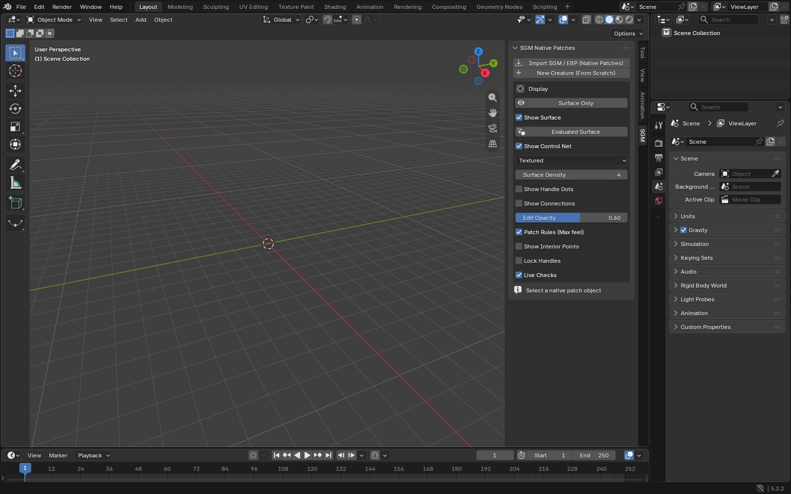
Importing a stock creature
- SGM Native Patches > Import SGM / EBP (Native Patches) (also File > Import >
Impossible Creatures Model (.sgm / .ebp)). Pick
rhinoceros.sgm. The file browser's Clips as Actions option (on by default) bakes every animation clip into a named Action on the rig. - You can pick the
.ebpinstead: a proxy blueprint opens the same-named.sgmbeside it, a blueprint that embeds its creature opens the embedded one. Only the geometry is imported; the blueprint's own data (motion tree, events, icon) stays with the.ebp. - The status bar reports
Imported Rhinoceros from rhinoceros.sgm: 2594 CPs, 288 patches, rig 54 bones, 10 clips as Actions. Two objects appear in the Outliner:Rhinoceros(the control-point mesh, active) andRhinoceros_rig(the armature). - Frame it with View > Frame Selected (numpad .).
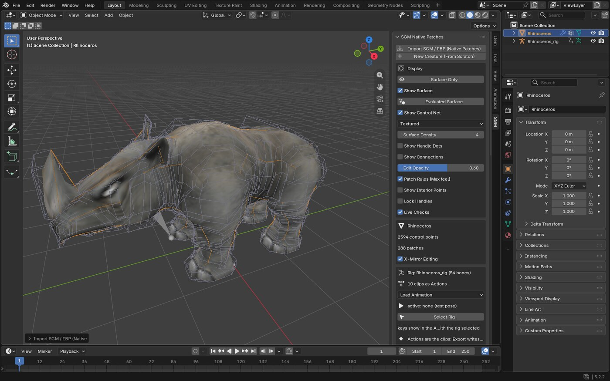
Gatherers, characters, structures and props (scene .sgm files) import through the same button, as
ordinary triangle meshes drawn exactly as the engine draws them; the SGM panel then shows a shorter set of controls,
and their meshes can be edited and exported: see the chapter Gatherers, characters, structures and props.
(Corrected 2026-11-17: this said their geometry could not be edited.)
What you are looking at
- The control points are the file's. The
Rhinocerosmesh has 2594 vertices and no faces: vertex i is control point i of the.sgm. Every native selection and transform tool moves real control points; a shared corner is one vertex, so the surface stays watertight by construction. - The surface is a live overlay. A GPU handler evaluates the exact bicubic surface from the current vertices, re-tessellating only the patches that changed, with the engine's normal rule (analytic normals welded across seams and per smoothing group at corners). It is drawn with the creature's real textures, and it follows the rig when you pose it (the overlay reads the evaluated mesh).
- The control net is a second overlay: the 4x4 grid of every patch.
- The rig is a Blender armature with one bone per SGM bone at its bind-pose world transform; every control point sits in its owner bone's vertex group at weight 1 (the file skins each point to exactly one bone).
- Clips are Actions. Each of the 10 clips became a named Action on
Rhinoceros_rig(one key per clip frame, stashed on a muted NLA track). An Action is a clip: edit, rename, add or delete Actions and Export writes them back.
The Display box drives the overlays:
- Surface Only hides the control-point object and the armature and leaves the surface (turn it off again to edit).
- Show Surface and Show Control Net toggle the two overlays.
- Evaluated Surface (off by default) builds the surface as real geometry with a Geometry Nodes modifier instead of drawing it, so it renders in Eevee and Cycles with the creature's materials and UVs, and snapping and click-select see it. It re-evaluates the whole surface on every control-point move (about 8x the overlay's cost at 800 patches), so the overlay stays the editing view.
- The shading dropdown: Textured (the creature's skins), By Limb (one colour per body part), By Bone (surface and points coloured by owning bone) and Plain (grey).
- Surface Density is the number of samples per patch edge for the overlay and the bake (2 to 16, default 4; the engine itself uses 5x5 per patch).
- Show Handle Dots colours the points by kind, on-surface corners gold and off-surface handles blue.
- Show Connections highlights the graft rings, the control-point loops where limbs attach.
- Edit Opacity is the surface's opacity in Edit Mode, so you can reach the handles through it.
- Patch Rules (Max feel) is what makes editing feel like a 3ds Max / gmax Editable Patch: a corner drags its tangent handles with it, and the interior points follow Max's Auto Interior rule. Turn it off for raw control-point editing.
- Show Interior Points reveals the interior points, which are hidden by default (Blender's vertex hide: not drawn, not selectable) because the rule computes them.
- Lock Handles turns a corner's other handles by the same rotation as the one you move.
- Live Checks keeps the panel's warnings (a broken pool, a pending skeleton edit, a stale UV cage) up to date as you work rather than only at Export.

- Press Tab for Edit Mode. The surface turns translucent and the panel gains three boxes: Modeling (Extrude Patch, Delete Patch, Auto Interiors, Set Corner / Set Coplanar), Topology (Weld, Weld Target, Add Quad, Fill Hole, Subdivide, Extrude Region, Mirror to Whole) and Select (Corners / Handles, Hide Patches / Unhide). A button the creature cannot use is greyed out with the reason: Add Quad and Fill Hole need an open side, which a stock creature has none of.
- Turn on Show Handle Dots, select a point and press G: the surface deforms under it as you drag. Box and lasso select, proportional editing (O), snapping and mirror all work. X-Mirror Editing (in the creature's info box) is on after import, so an edit on one side drives its spatial partner.
- Press 3 for Face select: that is patch select. The mesh carries one quad over each patch's four corners, so a click, a box, a lasso, Select Linked and Grow / Shrink all take whole patches, and the selected patch is outlined in orange.
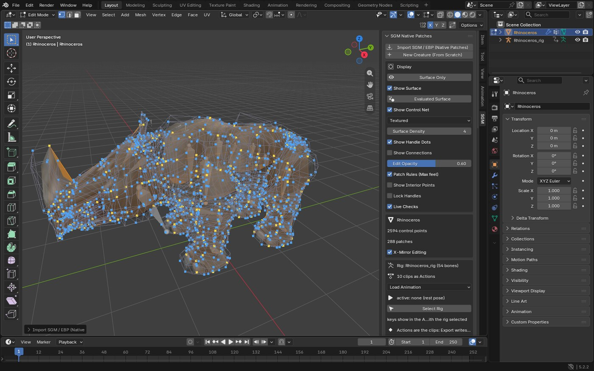
The SGM panel, top to bottom
Below Display the panel shows, for a native creature:
- The creature's name, control-point and patch counts, and X-Mirror Editing.
- The rig box:
Rig: Rhinoceros_rig (54 bones),10 clips as Actions, the Load Animation menu, the active Action (active: none (rest pose)after import) and Select Rig. - Sculpt: Sculpt Surface (and, while a sculpt is in progress, Refit Patches and Discard Sculpt) — see the sculpting chapter.
- Tools: Attach, Symmetrize (X), Relax Seam Tangents, Retarget Creature to Mesh, Create Landmarks / Landmark Retarget, Trim Stray Surface, and Validate (will it load?) with its Combine Checks dropdown (Quick / Off).
- Bake Textured Mesh, Paint Skin, Transfer Texture, Edit UVs (and Apply UVs while a UV cage exists) and Export SGM (Native Patches).
- The Boner sub-panel (bones, limbs, connections, skinning, joint limits and IK chains) and the collapsed Combine Preview sub-panel.
- Above Display, with an ordinary (non-native) mesh active: Convert Mesh to Creature and Fit Patches to Mesh.
Boner: Bones, Limbs, Connections
The Boner sub-panel is the add-on's version of Relic's Boner tool, with the same three tabs. With the link toggle next to the Bones tab's Overlay field on (Follow Shading, the default), choosing the Limbs tab switches the shading to By Limb and the Bones tab to By Bone.
- Limbs lists every limb with its Boner class, patch and bone counts and a status (
ok,stub,no bones, ...). The rhinoceros has 13: Torso, Head, Tail, four legs, and sixstublimbs (wings and front arms with no patches, one bone each, so other creatures' parts can graft there). Click a limb name to make it active: its classification boxes, its bone list and Rename / Add Standard / Delete appear. In Edit Mode, Select Limb grabs a whole body part and Assign Selected to Limb moves patches between parts.
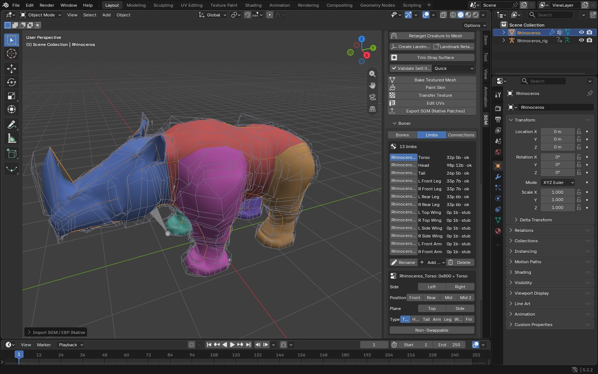
- Bones is the skinning loop and the skeleton editor: pick the active bone in the
Bone field or with the eyedropper (Pick Bone: click a control point or a bone),
rename it with the pencil, or Add Bone under Active. The read-out says what it owns
(
head · 272 points · parent neck3). In Edit Mode Assign Selected, Select Points and Remove from Bone move points between bones; Auto Skin gives points their nearest bone. The Unassigned count warns when a point a patch uses has no bone, which Export refuses. Below that sit the active bone's joint limits (the BONE record's own values, with Reset to Stock) and the creature's IK chains (Add / Edit / Remove / Reset). Deleting and re-parenting bones is Blender's own X and Ctrl+P in the rig's Edit Mode, and Export takes them.

head active in Boner > Bones: its points and surface bright, every other bone dimmed.- Connections lists the 12 connection rings (name, Parent > Child class, corner count
such as
6/6for the head, host bone, status) with Create for Limb, Rename, Delete and, in Edit Mode, Add Stub Socket. The active connection's boxes below set its Parent / Child classes, its host bone (Set / Default), its ring (Pick Ring / From Selection, Edit Mode) and Optimise Start / All Rings, which rotate a ring's corner list onto the start the combiner welds best. With Show Connections on, the rings are drawn on the creature and the active one is bright; a ring's colour follows its status.
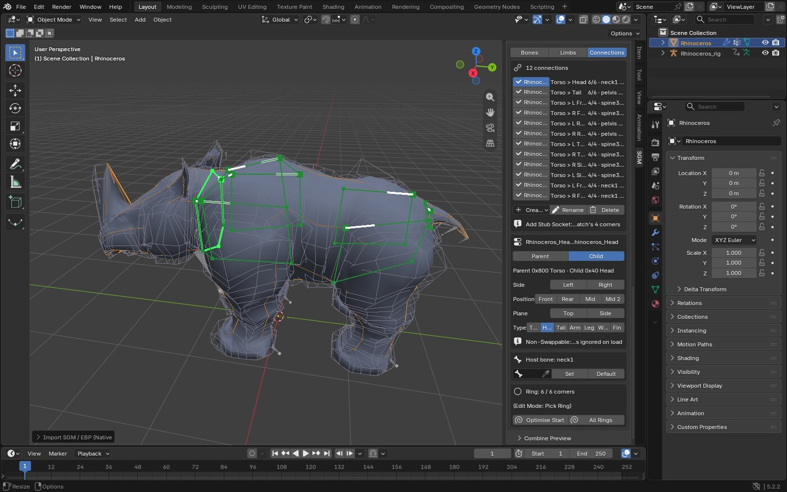
Playing a clip
- In the rig box choose Load Animation > walk. The clip's Action becomes the rig's active Action,
the scene's frame range and frame rate are set from it, and the status bar says
Active action 'walk' (51 frames): Space plays; Select Rig to see its keyframes. - Scrub the timeline or press Space: the surface follows the posed rig.
- Press Select Rig (or select
Rhinoceros_rig) and turn an area into a Dope Sheet or Action Editor to see and edit the keys. Every other clip is a stashed Action you can pick in the Action Editor too.
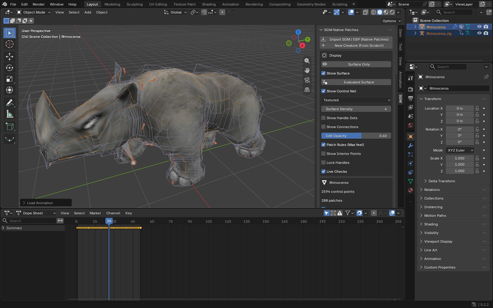
Validate: three tiers
Tools > Validate (will it load?) judges the creature exactly as Export would write it, in memory (so limb, ring, skeleton, skinning and Action edits all count). It reports in three tiers plus the combine checks:
- Blocking problems (red): what would stop the Object Editor from loading the file, such as a
dangling patch edge, a patch not in any limb, a patch mesh over the engine’s 12,288 display vertices (or one that a combine would push over), or a control point on a patch with no bone.
The summary then reads
N problem(s) block loading, ....EXPORT BLOCKED: ...means the control-point pool itself is broken (a native Delete / Merge / Duplicate of vertices), which Ctrl+Z recovers. - STOCK gaps: things every base-game creature has (the 9 standard clips, the canonical bones, rings,
IK chains, a connection host that owns points, ...). They do not stop loading; some Tellurian add-on creatures lack them
too. The summary reads
Loads in the Object Editor; N stock-rulebook gap(s) .... - WARN advisories:
WARN export:lines are what Export will say (a rest-pose edit next to a kept clip, a renamed bone the game looks up by name),WARN oe:lines repeat the Object Editor's own limb and connection warnings in its wording. - COMBINE lines, never blocking: with Combine Checks: Quick (the default) Validate
runs the combiner's precheck and 13 combines with 6 stock donors (about 2 s) and lists
COMBINE ERROR/WARN/INFOfindings; with Off only the instant precheck runs.
- Leave the dropdown on Quick and press Validate (will it load?).
- The verdict shows in the status bar; every line is kept in the Info editor (switch any area to
Info, or use the Scripting workspace). For the untouched rhinoceros it is one line:
Valid: should load in the Object Editor, complete as a stock creature, and combines right.

Export: untouched means byte-identical
- Press Export SGM (Native Patches) (also File > Export > Impossible Creatures Patch Mesh (.sgm)). Blender's file browser opens; choose where to write. Keep the stock files as they are — export somewhere of your own.
- Exporting over the creature's own base file (the file you imported, or the one Fit Patches to Mesh or New Creature wrote) is a save in place: the object is re-based on what was just written, so the next export gives the same bytes again. While a skeleton edit is pending — a bone added, deleted, re-parented or renamed, or a stub bone created — that is refused by name instead, because those are recorded as a difference against the base and would be applied to it twice. Export under another name.

.sgm to write.- The report line names what changed and, for an untouched creature, ends with
byte-identical to the source:Wrote 348657 bytes to .../rhinoceros.sgm: no edits; byte-identical to the source. After an edit it names each change instead, for examplegeometry: 12 control points re-encoded, and aclips: 9 kept, 1 writtenpart once an Action was edited. - Only what you edited is rewritten: moved control points at the file's float32 precision, edited tables, painted textures, re-encoded or new Actions. Everything else keeps its source bytes, and clean chunks are copied verbatim.
- Export refuses rather than corrupts: a broken control-point pool, an object transform, shape keys or extra modifiers, a deleted rig or skin image, a source file changed since import, and the skeleton edits the format cannot express (the root bone deleted, a bone the game looks up by name deleted, a stub bone or a connection host taken away) all cancel the export with the fix in the message. Each refusal is also shown in the panel when you make the edit, not only when you press Export.
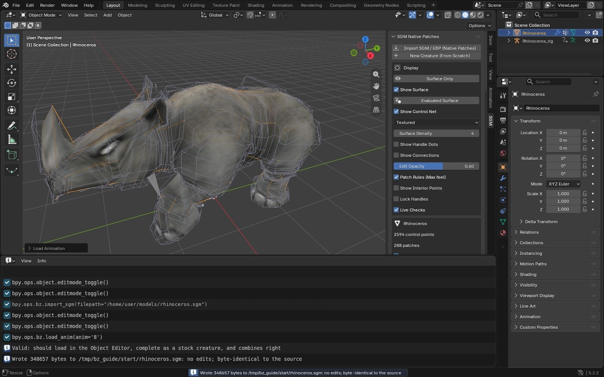
Combine Preview
Expand the Combine Preview sub-panel (it starts collapsed). It combines the creature you are editing with another one exactly the way the game's combiner does, on the in-memory export model, so unsaved edits count.
- Choose the role: This Creature Is the Torso (the other creature donates parts) or This Creature Donates Parts; the arrows button swaps them.
- Choose the other creature: Stock (from the stock directory,
Cheetahhere), Object (another native creature in the scene, edits included) or File. - Toggle the part buttons, ComboTest's own set: Head, Tail, Front Legs, Rear Legs, Wings, Front Arms (plus All / None). A part the donor has no limb for is greyed out.
- Press Preview. The result is drawn beside the creature as a transient ghost (no datablocks, no undo
step); the readout lists size, body scale, each slot's source and scale, the game's stats with a delta against this
creature alone, and warnings such as the combined creature won't load. Any relevant edit marks it
stale: press Refresh. Clear removes the ghost; Materialize… writes the
combination as a real creature (
.sgm+.lua+.lsc) and imports it; Validate Combines runs the Quick tier alone.
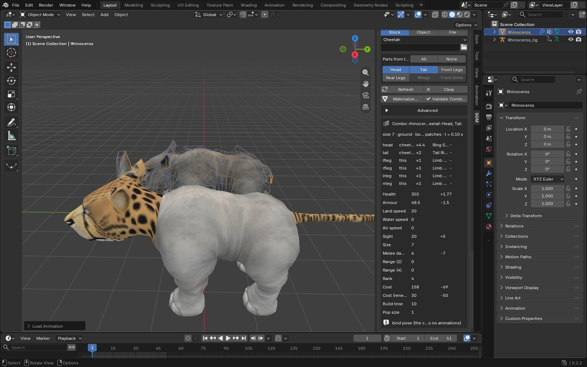
Bake Textured Mesh
The overlay exists only in the viewport, so to render the creature in Eevee or Cycles press Bake Textured
Mesh. It creates a real mesh object (Rhinoceros_baked) tessellated at the current
Surface Density, with the creature's materials, textures and UVs and the engine's normals as custom
split normals, and switches the viewport to Material Preview. The redo panel's Posed option bakes the
surface as the rig currently poses it instead of the rest pose. The bake is a copy: editing it changes nothing in the
creature, and Export still reads the control-point object.
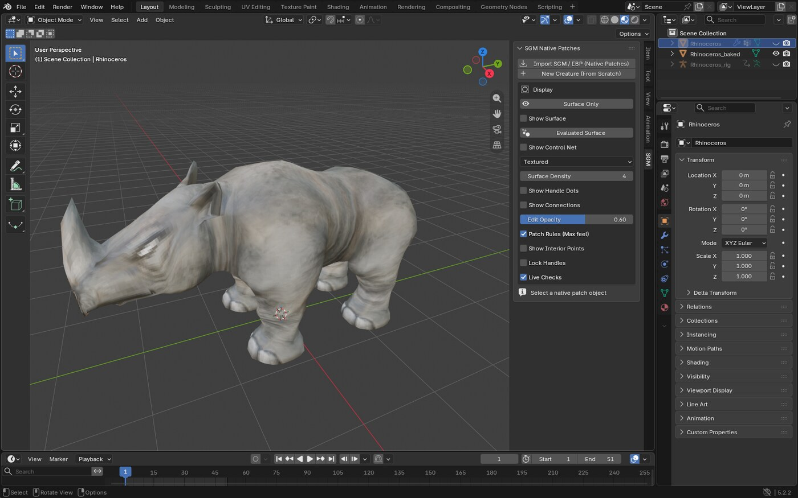
Rhinoceros_baked; shown alone here with the overlays off, in Material Preview.Editing an existing animal
The fastest way to a new creature is to reshape one that already works. This chapter takes the stock rhinoceros
(Assets/engine_stock/rhinoceros.sgm, 2594 control points in 288 patches) through the geometry workflow:
Tab into Edit Mode, pick the right kind of control points, move them and watch the live surface, use Blender's
proportional editing and mirror tools, grow a patch, run Symmetrize, Relax Seam
Tangents and Validate, and export. Every screenshot below was captured from the add-on
exactly as described; the numbers in the captions are the numbers it reported.
Two facts make the rest of the chapter predictable. First, the vertices of the imported object are the file's control points, one to one and in file order; there are no faces, the surface is an overlay drawn from the points. Second, export rewrites only what changed: an untouched creature comes out byte-identical, and a moved point is re-encoded at the file's own float32 precision while every other byte is copied.

Into Edit Mode: what the points are
- Import the creature (SGM > Import SGM / EBP (Native Patches), or File > Import > Impossible Creatures Model (.sgm / .ebp)) and press N for the sidebar, tab SGM. The info box reads 2594 control points, 288 patches.
- Press Tab. The surface turns translucent (Display > Edit Opacity, 0.60 by default) so you can reach the points behind it, and every control point is an ordinary vertex: click, box select (B), lasso, A for all.
- Turn on Display > Show Handle Dots. Corners (the 4 points per patch that lie on the surface) are drawn gold and the tangent handles blue.
- The interior points — the four middle points of each patch — are hidden (Blender's vertex hide: not drawn, not selectable), because the add-on computes them from Max's Auto Interior rule, which every base-game patch obeys. Display > Show Interior Points reveals them, and an interior moved by hand flags its patch manual so the rule leaves it alone from then on (Modeling > Auto Interiors puts selected patches back on the rule).
- In Edit Mode the panel gains a Select box with two buttons: Corners selects only the on-surface points, Handles only the off-surface ones. Use them before a box select when you want to shape the silhouette without dragging handles along, or the other way round.
- Press 3 for Face select and a click takes a whole patch (its outline goes orange). Patch-level selection, and everything that makes geometry with it, is its own chapter.
It edits like an Editable Patch
With Display > Patch Rules (Max feel) on — it is on by default — the add-on behaves like a 3ds Max / gmax Editable Patch rather than like a bag of points:
- A corner drags its tangent handles with it. Grab one corner and its four handles come along, so the surface translates instead of pinching. A handle moved on its own is a tangent edit and stays where you put it.
- The interior points are automatic (
interior = row handle + column handle - corner, Max's Auto Interior rule), recomputed during the drag for the patches you touch. They are hidden, so they cannot get in the way of a selection. - Set Corner / Set Coplanar (Modeling) set the Max vertex type of the selected corners. Coplanar flattens the corner's handles into one plane and keeps them there when you move one (the others turn with the plane); Corner — which is what every stock handle is — leaves them free.
- Display > Lock Handles turns a corner's other handles by the same rotation as the one you move.
- Display > Patch Rules off turns all of it into raw control-point editing, which is what the add-on did before, and which is still what you want when you are placing a single point exactly.
Nothing is rewritten until you move something, so an untouched creature still exports byte-identical — but the rules do mean that one corner move touches more than one point. The horn move below moves 16 selected points and re-encodes 59, because their handles and their patches' interiors followed.


Moving points: lengthen the horn
A corner now carries its handles and its patches' interiors, so a single-corner drag translates the shape instead of pinching it. Selecting a whole region — corners and the handles around them — is still the way to move a feature bodily, because it moves the handles you can see as well as the ones the rule owns.
- Orbit to the right side of the head (Numpad 3) and box select the tip of the horn: on the rhino that is 16 control points, 3 corners and the handles around them.
- Press G and move (here 0.15 m forward and 0.45 m up; type G Z 0.45 Enter for an exact axis move). The overlay re-evaluates only the patches that touch a moved point, so the surface follows the drag live even on a 288-patch creature.
- Export SGM (Native Patches) at any time. The report in the status bar says what was rewritten: after this one move it reads geometry: 59 control points re-encoded — the 16 you selected plus the handles and interiors the patch rules carried with them. Everything else in the file is the original bytes.
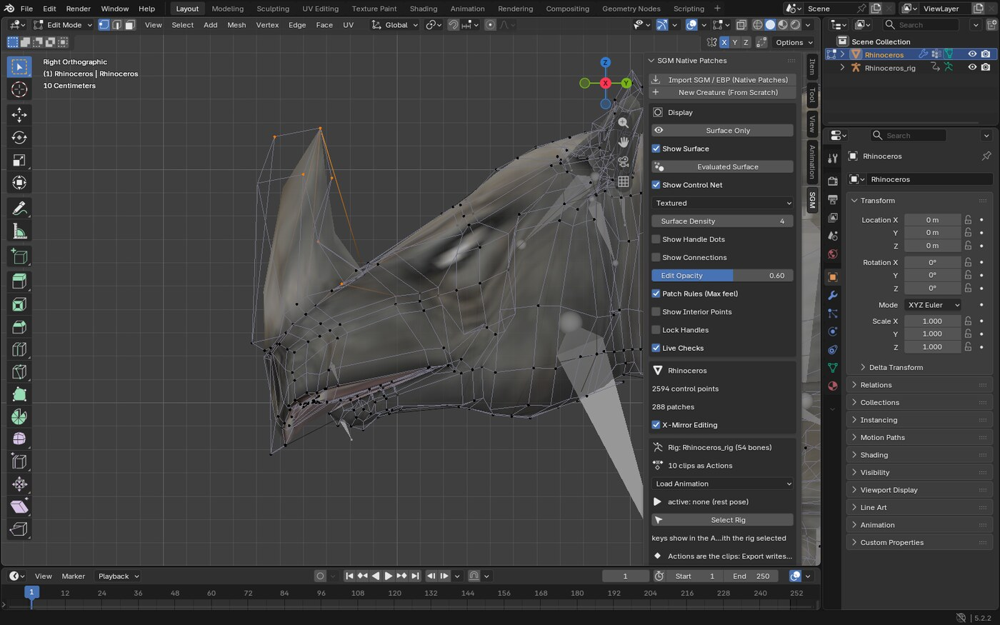

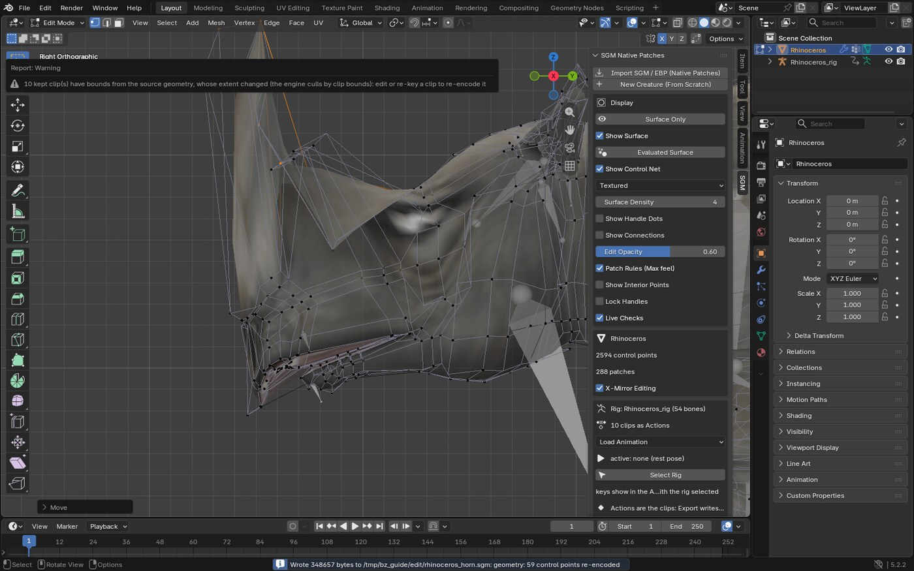
Undo, also across Tab
Every SGM operator pushes one undo step, and the add-on keeps a journal of its tables (patches, limbs, rings, skinning) per mesh state, so Ctrl+Z works in Edit Mode, in Object Mode and across the mode switch. Tab out after the horn move and press Ctrl+Z: the horn is back where it was, and the panel still reads 2594 control points / 288 patches. Ctrl+Shift+Z brings the move back.
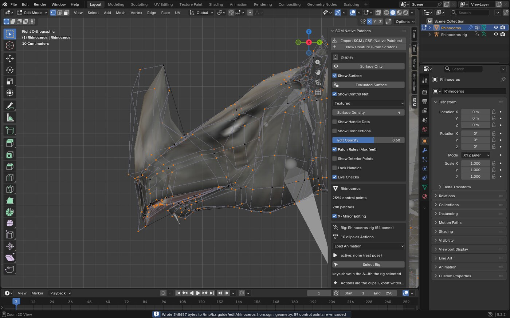
Symmetry: Symmetrize (X) and X-Mirror
Stock creatures are only approximately symmetric (the rhino pairs 95 % of its points within a millimetre). Tools > Symmetrize (X) snaps every point that has a mirror partner to exact bilateral symmetry by averaging the pair, and puts the points on the centre plane at X = 0; it works in Object or Edit Mode and is one undo step. The report says how many pairs it found.
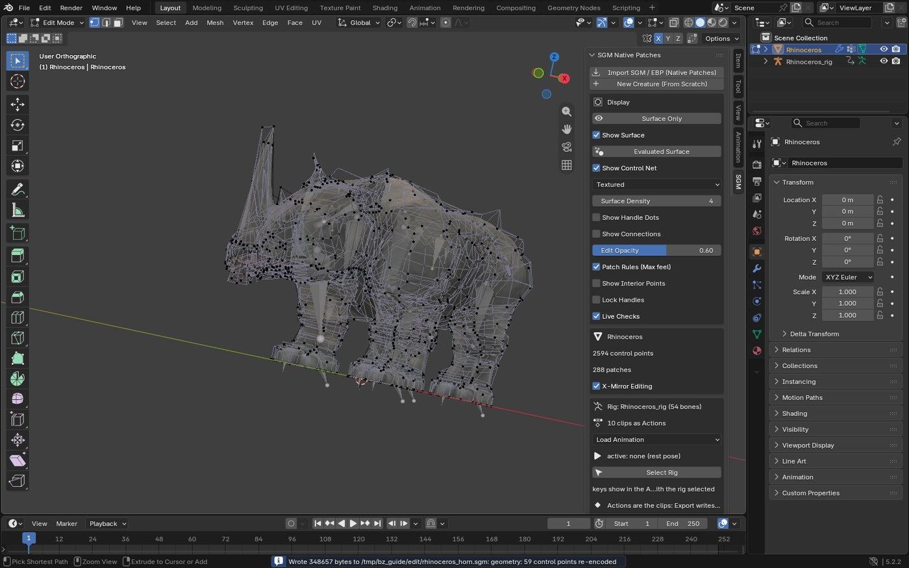
X-Mirror Editing (the checkbox in the panel's info box, Blender's own mesh symmetry option) is on from import. Blender finds a partner by exact mirrored position, so it only has something to work with after Symmetrize, and any asymmetric edit in between (a proportional move, Relax Seam Tangents) breaks the pairing again. After a Symmetrize it carries every selectable partner: in this capture a scripted G move on the left ear moved 30 of the ear region's points and 30 partners on the right. The route that always works — and that you can see working — is to select both sides first:
- Select the points of one side, here the left ear (30 selectable points; the interiors among them are hidden and follow their corners by the patch rule).
- Select > Select Mirror (Shift+Ctrl+M) with Extend on adds their partners (60 selected).
- G Z 0.3 Enter raises both ears together. (Editing one side and running Symmetrize (X) afterwards is the other way to the same result.)

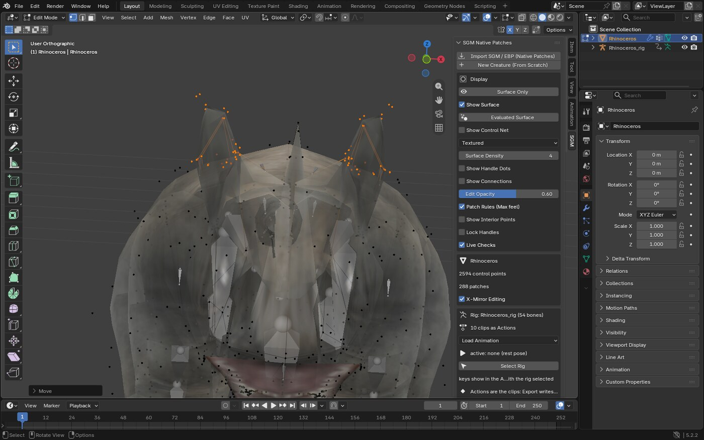
Proportional editing: raise the back
Proportional editing (O, or the icon in the 3D view header) is plain Blender and works on the control points as on any mesh: the neighbours of the selection follow with a falloff, so one point can reshape a region without pinching. Select the topmost corner on the back, press O, then G Z 0.35 Enter; scroll the mouse wheel during the move to change the radius (1 m here). Press O again to turn it off before the next precise move.

Relax Seam Tangents
Where two patches meet, the game only needs the surface to be continuous (C0); the stock files have visible tangent kinks across two thirds of their seams, hidden in the game by averaged normals. Tools > Relax Seam Tangents nudges the interior tangent handles on both sides of a seam toward a shared direction (C1) without touching the shared boundary points, so it stays local. With nothing selected it treats every seam; select all four points of one seam (its two corners and the two boundary points between them) to relax just that one. Repeat the click to strengthen the effect; every run is one undo step.
Extrude Patch: growing geometry
Modeling > Extrude Patch (Edit Mode) adds one patch onto an open side, a side used by a single patch. Select the two end corners of that side (or all four corners of a patch that has exactly one open side) and click the button: the creature gains 12 control points and one patch that shares the side, placed one handle spacing out from it, with the seam oriented the way every stock seam is. A shared side is refused, because an edge used by three patches does not load, and the button is disabled on a closed creature with that reason as its tooltip. The stock rhinoceros is closed, so the demonstration uses a copy with one patch removed from each flank.
Extrude Patch is the oldest of the geometry tools and the simplest. The Topology box next to it does the rest — Weld, Add Quad (Extrude Patch on every selected open side at once), Fill Hole, Subdivide, Extrude Region and Mirror to Whole — and Delete Patch takes patches away. They have their own chapter.


Validate: will it load?
Tools > Validate (will it load?) builds the creature exactly as Export would, in memory, and checks it. The findings arrive as reports (the summary in the status bar, every line in the Info editor) in three tiers plus the combine checks:
- Blocking problems (no prefix): the Object Editor will not load this. Dangling patch edges, an edge with more than two patches, a patch mesh over the engine's 12,288 display vertices (the real ceiling: a patch costs 16 of them where its seams weld and 25 where it has its own texture island, so it is a vertex budget, not a patch count — and Validate warns below that when a combine would push the total over), a control point a patch uses but no bone owns (Export refuses it), a broken control-point pool (EXPORT BLOCKED: a native Delete, Merge or Duplicate changed the pool; Undo it).
- STOCK: things every base-game creature has and this one lacks (the standard clips, the 18 universal bones, a ring per socket, IK chains). They load, but the game or the combiner may treat the creature differently.
- WARN: advisories, including WARN export: lines that repeat what Export will warn about. After the edits above it says 10 kept clip(s) have bounds from the source geometry, whose extent changed: the unedited animation clips still carry the original bounding boxes, and the engine culls by clip bounds, so a much bigger creature could pop out of view at the screen edge; editing or re-keying a clip re-encodes it with fresh bounds.
- COMBINE ERROR / WARN / INFO: with the dropdown next to the button on Quick (the default) Validate also runs the game's combiner rules and 13 test combines with stock donors; on Off only the static precheck runs. These never block loading.

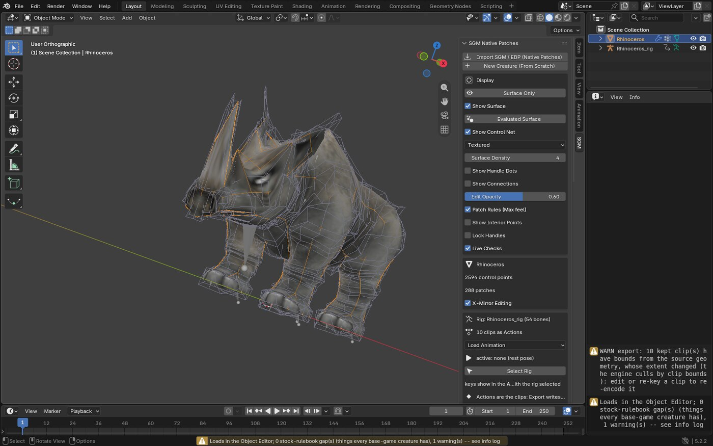
Export and the export summary
- Export SGM (Native Patches) (bottom of the panel, or File > Export > Impossible Creatures Patch Mesh (.sgm)), pick a path outside the stock folder, confirm.
- Read the report: Wrote N bytes to <path>: … followed by the summary line. It names only what changed, part by part: geometry: 2357 control points re-encoded after every edit of this chapter; a grown creature adds geometry rebuilt: +12 control points, +1 patches; rest-pose, ring, texture and clip edits get their own parts when they happened (for example clips: 10 kept, 1 written, 1 dropped). The same line is stored on the object.
- A creature you did not touch reports no edits; byte-identical to the source, and the file really is identical, byte for byte. That is the guarantee behind everything else: an edit changes exactly the bytes of the points you moved.
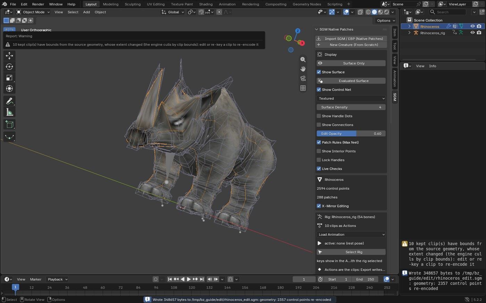
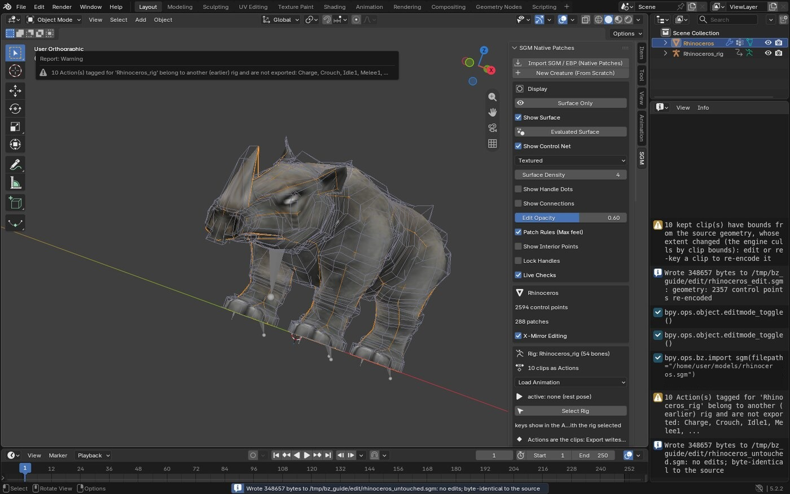
Topology: making geometry, not just moving it
Everything in the previous chapter moves control points that already exist. This one makes them: delete a
patch, grow one on an open side, close a hole, weld two seams together, split a patch in four, extrude a region, mirror
a half into a whole, join a second creature in. The tools live in the Topology box of the SGM sidebar
(Edit Mode) and in Modeling and Tools beside it, and all of them are used on the stock
cheetah (Assets/engine_stock/cheetah.sgm, 2594 control points in 288 patches) below.
One rule explains every refusal in this chapter. A patch mesh is watertight only when two patches share all four control points of a side — its two corners and the two boundary points between them. A side with one user is a dangling edge and the Object Editor refuses the whole file (measured: the cheetah minus two patches, six dangling edges, FATAL). So these tools work on the index table rather than on positions: two corners at the same place are still two corners until they are welded.
Patches are selectable
- Tab into Edit Mode and press 3 for Face select. The mesh carries one quad face over each patch's four corners — never shaded, because the object is displayed as Wire, so Blender draws only its edges.
- Click a patch: its outline goes orange, exactly like gmax's dark-red patch outline. Box, lasso and circle select take patches, and so do Select Linked and Grow / Shrink. With X-ray off the box no longer grabs the far side of the body (Blender's own depth test on the faces; Alt+Z selects through).
- H, Shift+H and Alt+H hide, hide-unselected and unhide patches; the surface overlay, the control net and the handle dots all skip hidden patches. Unhide keeps the interior points hidden.


Delete Patch and Fill Hole
- Select two neighbouring patches on the flank (and, so the view can look straight through, their mirror partners on the far side).
- Modeling > Delete Patch (also X > Patches, and Blender's own X > Faces is routed to the same operator). The patches leave the patch table; control points no other patch uses are dropped and the pool is compacted, with patches, rings, limbs, UVs, materials, smoothing groups and per-point data all remapped. It is one undo step.
- A patch whose side is a connection ring's edge is refused by name: the combiner welds a ring by its corner count along patch sides, so cutting one apart would break the socket.
- The hole is yours to close. Validate blocks on the dangling edges until you do.
- Topology > Fill Hole with nothing selected closes every hole it can — a loop of four sides or more, an even number of them — with a strip of patches built on the existing sides, so the fill shares all four control points of each and is watertight by construction (a 4-side hole takes one patch, a 6-side hole two, an 8-side hole three).


Add Quad and Weld
Add Quad grows a patch on every selected open side at once — an outline edge in Edge select, a side's two corners, or a patch that has open sides — continuing the surface by that side's own step, and sharing a corner's new column where two grown sides meet. It continues a surface; it does not close one. To close, bring the new patch's free corners onto the corners they should meet and Weld them.
- Select one open side of a hole (here in Edge select mode) and press Topology > Add Quad. The creature gains 12 control points and one patch that shares the side.
- Move the new patch's two free corners onto the hole's opposite corners (G, or snapping — the tool does not care how they got there).
- Select all four corners and press Weld. Corners closer than the Threshold (0 means 1 % of the creature's size) merge. Weld Target instead merges every selected corner into the active one, which stays exactly where it is.
- Because both sides were open, their handle pairs merge too — that is what actually closes the seam. Two corners touching is not a shared side; four shared control points is.


Subdivide: more patches where you need them
Subdivide splits every selected patch at u = v = ½ by de Casteljau, so the surface does not move (3 × 10-8 m on the cheetah, which is the float32 pool's own precision). The format cannot express a T-junction, so the split propagates along the strips through the neighbours — Max's Propagate, always on. One rear-leg patch of the cheetah takes 19 neighbours with it: 288 → 312 patches, and the mesh stays closed.
The propagation is also why Subdivide refuses more often than you would expect: a strip that reaches a connection ring's side cannot be cut (the combiner welds a ring by its corner count along patch sides), and the refusal names the ring. On the cheetah every torso strip crosses one of its 12 sockets, so no torso patch is subdividable, and 16 of the 33 patches of a rear leg are.
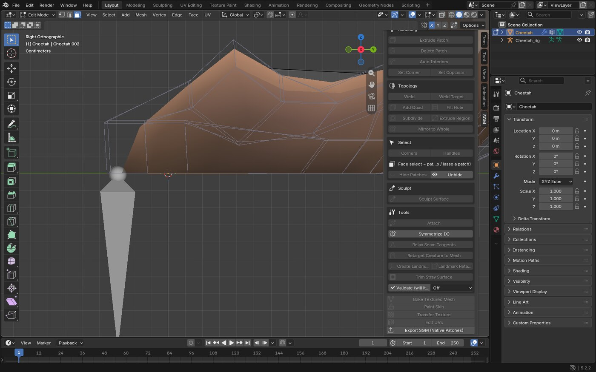
Cheetah_RRLeg) selected, the surface shaded By Limb.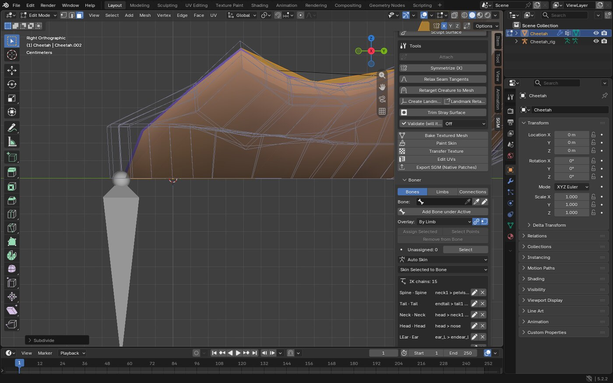
Extrude Region
Extrude Region is Max's Extrude & Bevel over a patch selection: Amount
lifts the region along its mean normal, Outline scales the lifted patches about their centre (the bevel
taper), and a wall patch spans every boundary side, so the result is still closed. bz.extrude_drag runs it
at Amount 0 and hands over to Blender's own move, which is the interactive way.
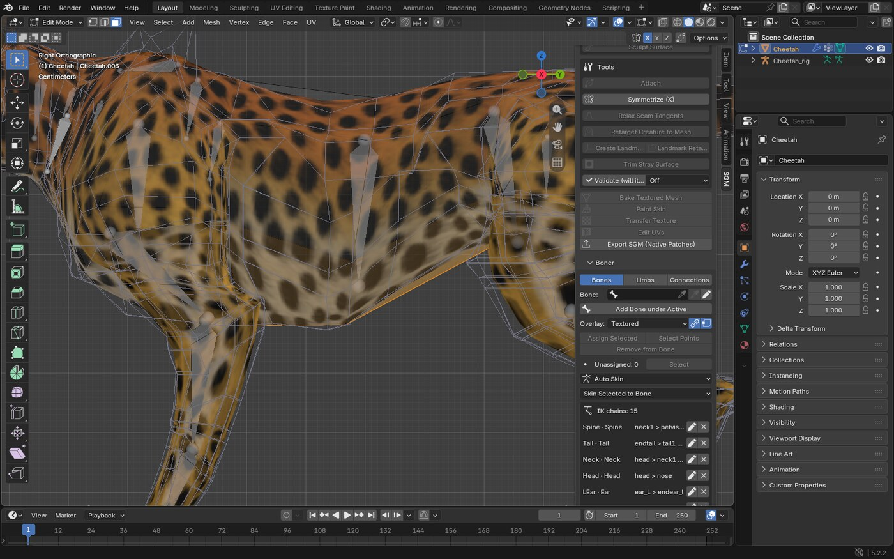

Mirror to Whole
Model one side and let the tool build the other. Mirror to Whole mirrors the selected patches (all
of them when nothing is selected) across X = 0 with their grid transposed: the mirror flips the surface normal
and the transpose flips it back, so the creature still faces outward and every seam is still wound the stock way. Points
on the plane are shared by both halves — the seam is welded, not doubled — and snapped exactly onto
X = 0 if you ask. The mirrored points are skinned to the _l / _r partner bone and their
patches go into the mirror limb.
- Make a half: delete the sockets whose rings reach into the half that goes (Delete Patch refuses a patch on a ring), then select that half's patches and delete them.
- Deselect everything and press Topology > Mirror to Whole.
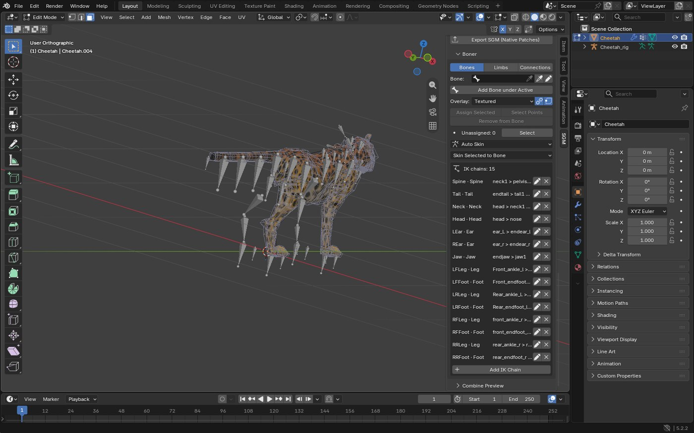
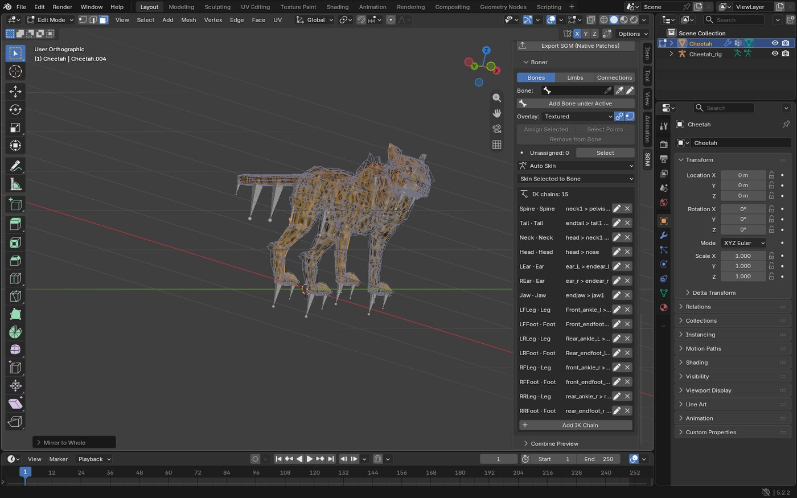
Attach: two creatures into one
Tools > Attach (Object Mode) joins another native creature into this one. Select the other creature, make this one active, and pick in the dialog which Limb its patches join and which Bone its points are skinned to. The pools are concatenated, every per-patch table is appended, material slots are matched by name, and the other object and its rig are removed. Its connection rings are dropped with a warning: a socket belongs to the creature it is cut into.

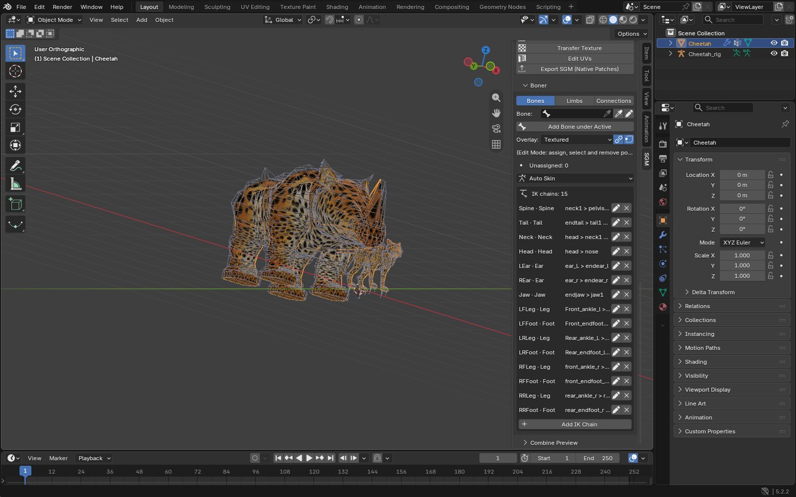
What it costs: the display-vertex ceiling
Every tool here adds patches, and patches are not free. The engine tessellates the whole patch mesh into one
DirectX 8 vertex set, and VertexSet::Create refuses more than 12,288 vertices
(dx8VertexSet.cpp:86). PatchMesh::CountVertices counts
V = 9·P + 3·E_owned + C_owned ≤ 12288A seam has one owner only when the two patches share a material, have overlapping smoothing-group masks and have both endpoint UVs within 1/16 of each other; otherwise both patches own it. So a patch costs 16 display vertices where its seams weld and 25 where it has its own texture island. Measured with the real Object Editor: with island UVs 490 patches load and 492 crash; with continuous UVs 754 load and 758 crash; and on one fixed 754-patch cage, V = 12,287 loads while V = 12,291 crashes — same geometry, different UVs.
The binding limit is the combined creature, not the creature. ComboTest.exe builds one patch mesh from both parents, so a graft hits the same ceiling: it exported a combine needing 12,258 vertices and failed the same combine four patches bigger at 12,310. The dearest stock limb set costs 5,704 display vertices and the dearest stock torso 4,409, which leaves an authored creature about 6,584 display vertices for its torso and 7,879 for its limbs. Base-game creatures are nowhere near: the dearest torso is 937. (Corrected 2026-11-17: this gave 5,623 / 4,762 / 6,665 / 7,526, the numbers before the combine budgets were re-derived on 2026-11-15.)
Validate measures all of it and says what your creature actually costs, and Attach refuses outright over the 767-patch best case. The number to design against is not a patch count — it is a vertex count you can only get from Validate.
Sculpting: brushes instead of control points
Dragging control points is precise and slow. Sculpt Surface and Refit Patches let you shape a creature with Blender's Sculpt Mode brushes instead, and then solve the change back into the control points of the patches you actually touched. Nothing else about the creature changes: the patch layout, limbs, connection rings, skeleton, skinning, textures and clips are the ones you started with, and the patches no brush reached keep their control points bit for bit, so they export byte-identical.
The chapter uses the stock cheetah (Assets/engine_stock/cheetah.sgm, 2594 control points in 288
patches).

Sculpt Surface
- With the creature active, open the SGM panel's Sculpt box and press Sculpt Surface.
- Its Density (redo panel, F9; default 7, range 4–12) is the number of surface samples per patch edge. More samples give the brushes finer vertices to push — but a bicubic patch can only hold so much detail, so the refit will flatten whatever the patches cannot express, and the report says how much.
- The exact bicubic surface is baked into a mesh named
<creature>_sculpt, with coincident seam samples merged so that it is one connected skin — Grab, Inflate and Smooth do not tear it at a patch seam. On the cheetah at density 7 that is 14,112 samples merged into 10,370 vertices, textured. - The creature and its rig are hidden and Blender enters Sculpt Mode, with X symmetry on when the creature is symmetric.


Cheetah_sculpt, 10,370 vertices, in Sculpt Mode. The panel now reads Sculpt of Cheetah · density 7, 10370 vertices.Sculpt it
From here it is ordinary Blender. Grab, Draw, Inflate, Smooth, Crease, masking, the Remesh-free brushes — anything that moves vertices without changing the topology. The sculpt mesh remembers which creature and which control points it came from, every vertex's bake position, and the sample → vertex map, and that is all the refit needs.

Refit Patches
- Press Refit Patches (it is in the panel from either object, the sculpt or the creature).
- The vertices are scattered back to the samples they came from, the samples that moved are found, and the
least-squares refit is solved with the one solver in the toolkit,
ICParse.codecs.fit.refit_samples. - Patches no moved sample touched keep their control points exactly; the touched patches take the closest bicubic shape to what you sculpted.
- The report says what happened, including the residual — what the patches could not hold. For the bump above: 180 patches refit (1,430 control points moved); residual rms 0.08 mm, max 0.89 mm; 108 patches untouched.
- The write goes through the journaled edit, so one Ctrl+Z gives the creature back byte-identical and the sculpt mesh with it. The creature is shown again and the sculpt mesh removed (Keep Sculpt Mesh in the redo panel leaves it in the file, hidden).


Reading the residual
The residual is the honest measure of whether the patches could follow you. A broad shape change (a hump, a thicker leg, a longer snout) refits to a fraction of a millimetre. Fine detail — scales, wrinkles, a sharp crease inside one patch — cannot be held by a 4 × 4 bicubic patch, and the residual will say so: the surface comes back smoother than you sculpted it. Two ways out, both in this guide: subdivide the patches you need detail in first (see Topology), or accept that the detail belongs in the texture (see Textures), which is where the base game puts it.
Making an animal from scratch: a rhino
This chapter builds a creature that did not exist before: a crude rhino. The shape is not the point; the point is
that every stage of a from-scratch creature is done once, in order, with the add-on's own tools: New Creature
(From Scratch), shaping the control net, a horn with its own bone and skinning, a look at the limbs and
connection rings, an animation, Validate, Combine Preview against a stock creature,
Export, and finally a load test in the real Object Editor. Every screenshot below was taken from the
capture script docs/guide/capture/chapters/ch_scratch.py, which is a scripted version of the same clicks.
What the scaffold gives you
New Creature (From Scratch) does not hand you an empty scene. It writes a complete, rulebook-clean
creature to the .sgm you pick and imports it through the normal import path, so that file is the object's
source exactly as for an imported stock creature. At Detail 1 it contains:
- the canonical 48-bone skeleton (pelvis, spine1-3, neck1-3, head, jaw, nose, ears, tail1-4, the four leg chains, plus the wing and arm stub bones every stock creature carries);
- a connected body: torso, head, tail and four legs as one closed quad cage turned into 248 bicubic patches over 2234 control points, so it is watertight and the Object Editor loads it as it is;
- 13 limbs (Torso, Head, Tail, four legs with patches; L/R side wing, L/R top wing and L/R front arm
as bone-only stubs) and 12 connection rings in the stock layout (6 corners for head and tail on
neck1/pelvis, 4 for the legs and the stub sockets), which is what the game's combiner grafts at; - a labelled checker texture with cylindrical UVs per body part, so the creature is obviously yours;
- the 9 standard clips (Idle1, walk, run, melee1, meleelow1, oattack1, crouch, stumbledie, stumblegetup) as procedural motions, imported as Actions on the rig, and the base-game IK chains.
The file dialog has five options: Name (limbs, rings and the texture are named after it), Detail 1-3 (sections per body span; 1 is the coarsest scaffold), Standard Clips, IK Chains and Clips as Actions. Leave them at their defaults for this chapter.
1. New Creature (From Scratch)
- In the 3D Viewport press N and open the SGM tab of the sidebar.
- Click SGM Native Patches > New Creature (From Scratch) (the same entry is in Add > Impossible Creatures Creature (From Scratch)).
- In the file browser set Name to
Rhino, keep Detail 1, pick a folder and file name (rhino.sgm) and confirm. The creature is written, imported, framed and selected; the info line reports New creature Rhino: 2234 control points, 248 patches, 48 bones, 12 rings, 9 clips -> rhino.sgm (rulebook clean). - Display box: switch the shading dropdown from Textured to By Limb and tick Show Connections to see what you got.
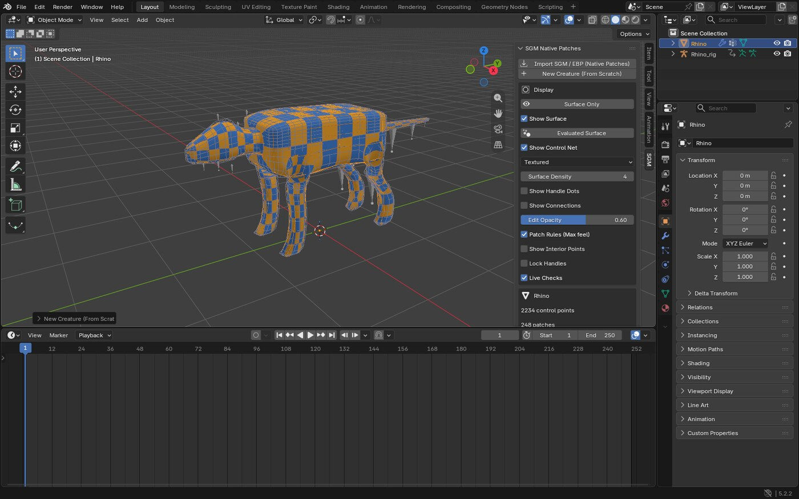

2. Shape it in Edit Mode
The object's vertices are the file's control points, so Blender's ordinary Edit Mode tools reshape the creature. Every patch shares its corner and handle points with its neighbours, so whatever you drag stays watertight. The scaffold comes with X-Mirror Editing on, so a move on one side moves its mirror partner.
- Tab into Edit Mode. Tick Show Handle Dots in the Display box: corners are gold, handles blue.
- Select a region and press G to grab, S to scale. Pick regions by body part: Boner > Limbs > Select Limb selects every point of a limb's patches (or box-select in a side view, Numpad 3). Proportional editing (O) helps to keep things smooth.
- For the rhino the capture script did, in one go: squashed everything to 78 % height (shorter legs, lower body; the feet stay on the ground), widened everything by 35 %, scaled the torso-only points into a barrel, scaled the head by 1.35 about the neck ring and dropped it 12 cm, shortened the tail to 45 % and let it droop, and thickened each leg by 30 % about its own axis.
- Tab back to Object Mode to judge the shape.


3. A horn: pull it out, give it a bone, skin it
The brief said "Extrude Patch a head patch". That does not work on the scaffold: Extrude Patch grows a new patch from an open patch side, and the scaffold is closed (every side is shared by two patches), so the button in the Modeling box is greyed out with that reason. A horn is made the other way round: pull existing head points out, then give them a bone.
- Edit Mode, front three-quarter view. Select the top-front control points of the head cap (22 points here: the upper half of the cap and the first ring behind it). With X-Mirror Editing on, selecting one side selects both.
- G and drag them forward and up (the script moved them 0.28 m forward and 0.32 m up). The cap bulges into a horn. Leave the points selected.
- Object Mode. In Boner > Bones set the Bone field to
head(type it, or use the eyedropper Pick Bone and click a head point). Click Add Bone under Active; in the dialog set Name tohorn, an Offset from the head bone's tail (in the head bone's axes) and a Length (0.25 m here), and confirm. The report says Added bone 'horn' under 'head', in limb 'Rhino_Head';hornbecomes the active bone and the tab shows pending: added horn (an added bone Export will write) and horn · 0 points · parent head. - Tab back into Edit Mode with the horn points still selected and click Assign Selected. The line becomes horn · 22 points · parent head and the By Bone overlay (the Bones tab switches to it) colours the horn points bright in the horn's colour, the rest dimmed.
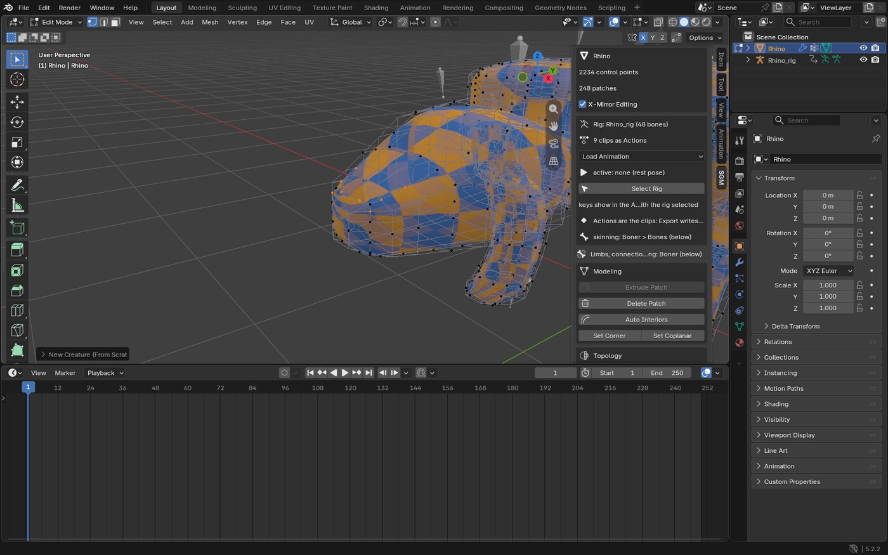

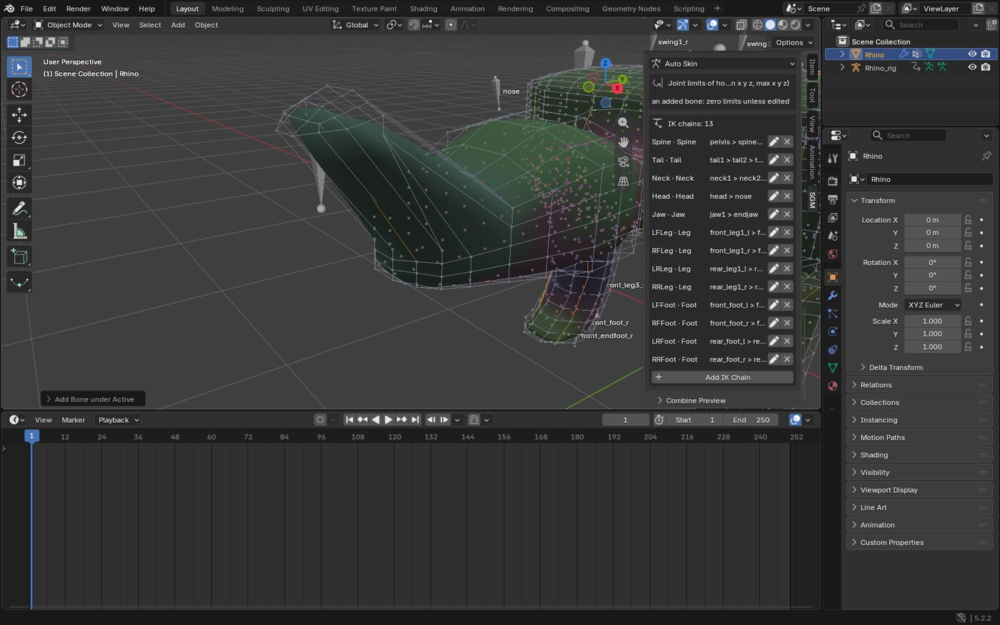
Bones after Add Bone under Active: the horn bone at the horn with bone names shown, the tab reading horn, 0 points, parent head">horn bone hangs under head with 0 points; pending: added horn means Export will write it.
horn. The By Bone overlay draws the
active bone bright and the others dimmed.4. Limbs and connections
The scaffold already has the standard limb set and one connection ring per socket, so this stage is a check, not a build. Both live in the Boner sub-panel (below the SGM panel; scroll the sidebar down).
- Boner > Limbs lists the 13 limbs with Boner's class label, patch and bone counts and a status: Torso 100 patches / 5 bones, Head 32p / 11b (the horn is in it now), Tail, four legs, and six stub limbs (0 patches, 1 bone) for the wings and arms.
- Click a limb's name to make it active; the boxes below show its classification (Side / Position / Plane / Type / Non-Swappable) and its bones, with Select Bones, Set Root Bone, Add / Remove Active Bone.
- Click Rename, type
Rhino_HornedHead, confirm. Only the name changes; the rulebook and the combiner key on the class (0x40 = Head), never on the name. - Boner > Connections lists the 12 rings as Parent > Child · corners · host bone
(Torso > Head 6/6 · neck1, Torso > Tail 6/6 · pelvis, the legs 4/4 on spine3 / pelvis, the stub sockets 4/4).
Tick Show Connections in the Display box and click the
Rhino_Headrow: its ring is drawn thick and bright at the neck, the other rings dimmed. Below the list: Create for Limb, Rename, Delete, Add Stub Socket, the Parent / Child boxes, the host bone with Set / Default, and in Edit Mode Pick Ring / From Selection.
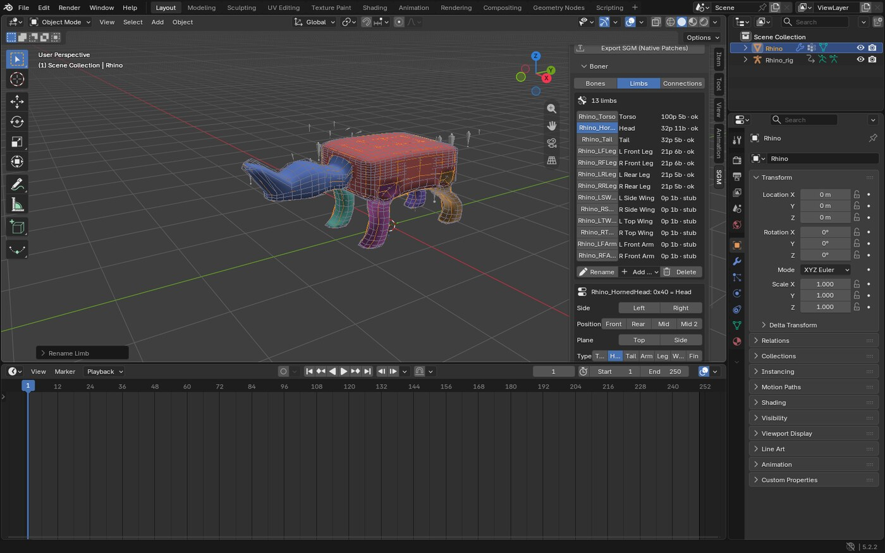
Limbs: the list of 13 limbs with class labels, patch and bone counts and status, the head limb renamed Rhino_HornedHead, its classification boxes below">horn.
Rhino_Head ring (6 corners, host neck1) bright at the
neck; every ring's status is checked against the stock layout (all ok here).5. Skinning: is every point on a bone?
The scaffold arrives fully skinned (every control point rigidly owned by the nearest bone of its part), and the shaping in step 2 does not change ownership. What can go wrong later is a point with no bone: Export refuses to write a creature whose patch points have no bone, and the Bones tab says so (Unassigned: N (N on patches: Export refuses)).
- Set the Display shading to By Bone (Boner > Bones does it for you): points with no bone are orange.
- Next to Unassigned click Select (Edit Mode) to select them.
- Either pick the bone they should follow and click Assign Selected, or use Auto Skin > Selected, else Unassigned to give each one its nearest bone segment. Auto Skin > Reset All re-derives the whole skin from the skeleton (a first pass; it agrees with Relic's hand skin on about half the points on stock creatures). Remove from Bone is the reverse. All of it is undoable with Ctrl+Z.
On this rhino nothing is unassigned; the horn assignment in step 3 was the only skin edit.
6. Animation
The nine clips are Actions on the rig. Loading one plays it; adding an Action adds a clip.
- With the creature active: Load Animation > Idle1 (rig box in the SGM panel). It becomes the active Action, the scene range follows the clip and the panel reads active: Idle1. Space plays.
- To see the keys, turn the Timeline into a Dope Sheet (Editor Type menu at its left, or drag its top edge up first to make room) and untick Only Show Selected in its filter, or click Select Rig and use the Action Editor. Each clip frame is one key.
- A new clip: select the rig, create a new Action (Dope Sheet > Action Editor > New), name it
headbob, enter Pose Mode (Ctrl+Tab), and keyneck2,neck3andheadat frames 1, 11 and 21 (I > Rotation) with the head pitched down at frame 11. The script did exactly that: 21 frames, three keyed bones. - Scrub to frame 11: the head dips. Export writes this Action as a tenth clip; the nine imported clips are kept byte-for-byte because they were not touched.
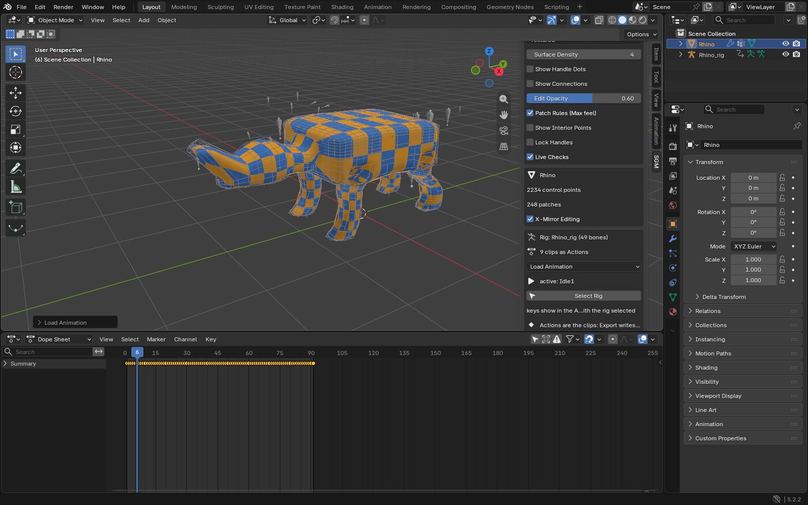
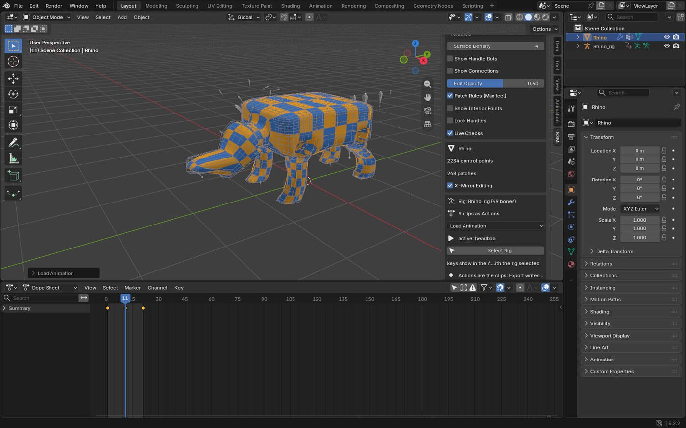
headbob Action scrubbed to frame 11: the head dips; the Dope Sheet shows its three keys.7. Validate, Combine Preview, Export
- Tools > Validate (will it load?) with the dropdown next to it on Quick (Combine Checks).
The verdict goes to the status bar and the Info log (Editor Type > Info). For this rhino nothing blocks loading and
nothing is missing from the stock rulebook; the log lines were:
WARN export: 9 kept clip(s) have bounds from the source geometry, whose extent changed (the engine culls by clip bounds): edit or re-key a clip to re-encode itCOMBINE INFO setup: default attributes, size 3 (no .lua next to rhino)COMBINE WARN precheck: legs without a ground speed ['speed_max-front', 'speed_max-back']: a combine keeping them zeroes the ground speedCOMBINE INFO rhino: 13 designs (13 combined, 0 skipped), 0 with issues, 1.7 s; its parts grafted onto: head 6, tail 6, front_legs 5, rear_legs 6 torso(s)
.luaattribute file, so a combine that keeps its legs gets a ground speed of zero. Neither stops the creature from loading or combining. - Combine Preview (the collapsed sub-panel at the bottom of the SGM panel; click its header): Role
This Creature Is the Torso, other creature Stock, pick
bullin the stock list, tick only the Head part button, click Preview. The game's combiner grafts the bull's head onto the rhino at its neck ring and draws the result as a ghost beside the creature (+X). The readout for this run: Combo: rhino torso + bull Head | size 5 · ground · body scale ×1.292 · 338 patches; the Head slot bull · ×0.691 · Ring Size & Limb Bounds, every other slot this. Clear removes the ghost; Materialize… would write the combination as its own creature. - Export SGM (Native Patches), file name
rhino_done.sgm. The report line names every change against the scaffold file:skinning: 5 bone range(s) rebuilt (2234 points re-encoded); bones: added 1 (horn); limbs: renamed 1 (Rhino_Head -> Rhino_HornedHead); bones 1 (Rhino_HornedHead); clips: 9 kept, 1 written. The moved control points are the "re-encoded" ones; the nine imported clips keep their bytes.
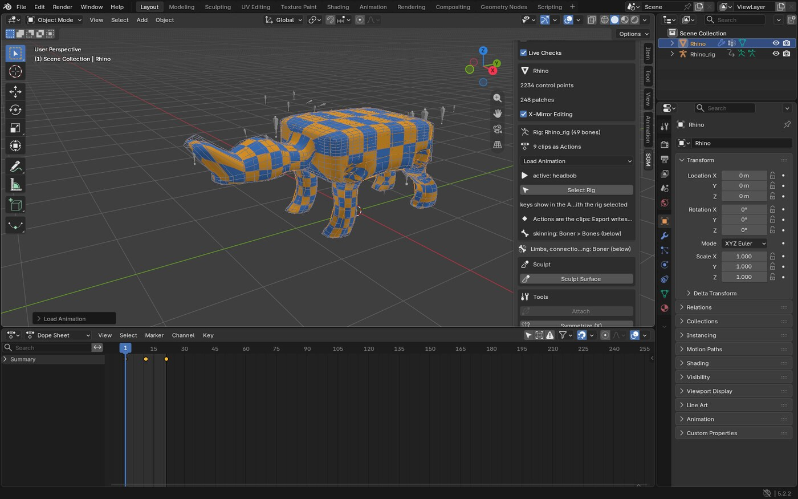
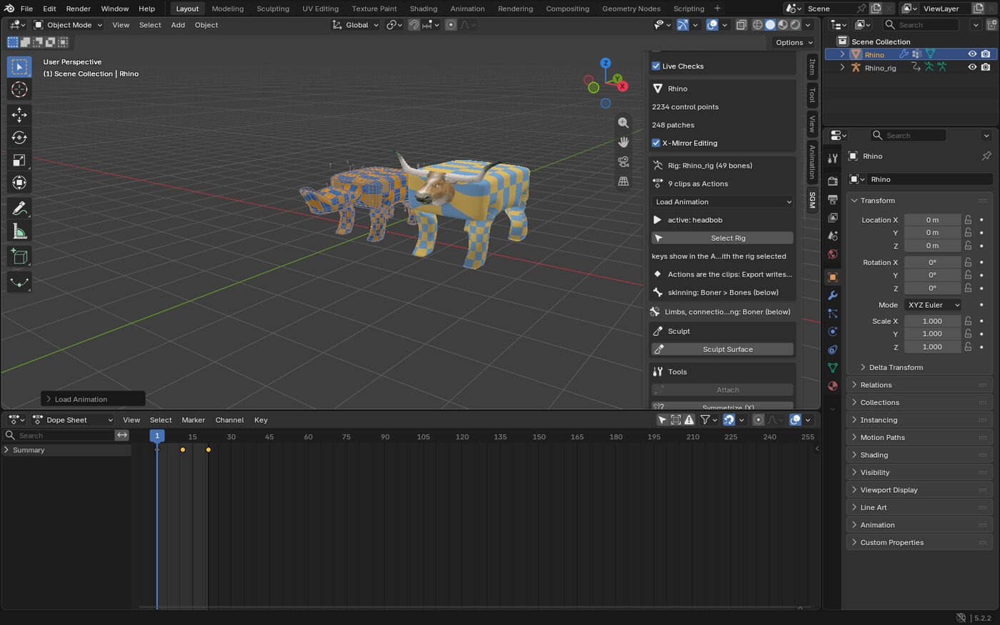

horn owns its 22 points, nothing is unassigned, and Export SGM (Native
Patches) writes rhino_done.sgm with the report line quoted above.8. Prove it loads
The repo's headless Object Editor harness loads an .sgm in the real editor under Proton and reports a
verdict. From the repo root (with IC_INSTALL set):
.venv/bin/rdn-oe /tmp/bz_guide/scratch/rhino_done.sgmFor the file this chapter exported it printed:
LOADED rhino_done.sgm 7.1s OBJECTEDITOR started at 2026-09-15 17:01; OS NT 6.2, 0MB Physical Memory
SUMMARY 1/1 loaded in the Object EditorThat is the whole workflow: a creature that never existed now loads in the game's own editor, with its skeleton, its 10 clips, its limbs and its graft rings, and combines with the stock creatures.
Fitting a mesh: an outside model becomes a creature
Fit Patches to Mesh turns any ordinary mesh — a sculpt, a scan, an imported .glb or
.obj — into a bicubic-patch creature at a patch budget you choose. It lays out quads over the mesh, makes
each quad a patch, solves the control points against the mesh's own vertices, borrows a template creature's skeleton and
materials, writes a .sgm and imports it through the normal path, so everything else in this guide then
applies to it.
This chapter fits Blender's own Suzanne, because it is in everyone's Blender: her two eye shells removed (they sit inside their sockets, and a fit wants one skin) and two Catmull-Clark levels applied, which gives one closed, X-symmetric surface of about 7,000 vertices.

What the fit will accept
The one hard requirement is one closed skin — and the add-on judges that fairly. Before anything else it welds a throwaway copy of your mesh by position (Merge by Distance at 10-5 of its diagonal), because an index buffer is not a surface:
- glTF splits vertices at every UV chart boundary. Every image-to-3D pipeline runs a UV atlaser
(
xatlas), and our own Bake Surface does the same at every patch seam. Measured on one such.glb: 472 parts and 14,524 boundary edges as shipped, one part and zero boundary edges after a positional weld — the same solid all along. - Boundary edges (one face) are not non-manifold edges (more than two faces). Blender's Select Non-Manifold counts both by default, which is how 14,524 boundary edges once became a "non-manifold" diagnosis and a voxel remesh that destroyed the model's UVs.
- What is refused is a mesh that is still several shells after the weld — eyes inside sockets, a detached limb — because the fit would pull the skin inwards to reach them. The message gives the part count, the boundary edges and the true non-manifold edges as three separate numbers, and names Merge by Distance.
- Your mesh is never modified. The weld is on a throwaway bmesh, and the layout is built from it only when the mesh actually has duplicates, so a clean mesh gives bit-for-bit the layout it always did.
Running the fit
- Select the mesh. With an ordinary mesh active, the SGM panel offers Convert Mesh to Creature and Fit Patches to Mesh above the Display box.
- Press Fit Patches to Mesh and set its options in the redo panel (F9):
- Patch Budget (default 300): how many quads the layout aims for. See the budget section below — this is the number that decides whether your creature can be combined.
- Layout: QuadriFlow remeshes a copy of the mesh to about the budget of quads (mirrored when the mesh is X-symmetric; 8 seeds are tried and the closed all-quad layout that starts nearest the mesh is kept, because QuadriFlow leaves small holes at random). Own Quads uses the mesh's own faces after tris-to-quads, as Convert Mesh does — use it when you modelled the quads yourself.
- Seam Smoothness (0.02): the weight of a soft C1 term across patch seams. Stock seams are C0 by design, so this stays small.
- Iterations (10): project-and-solve rounds.
- Skeleton Template (.sgm): the creature whose skeleton, materials and body plan the result borrows.
- Output .sgm: where the creature is written. That file becomes its source, exactly as if you had imported it.
- Error Heat Map and Split into Limbs, both on by default (below).
- Wait. About 35 s for 300 patches, 70 s for 600, 2–3 minutes for 2,000, in Blender's numpy.

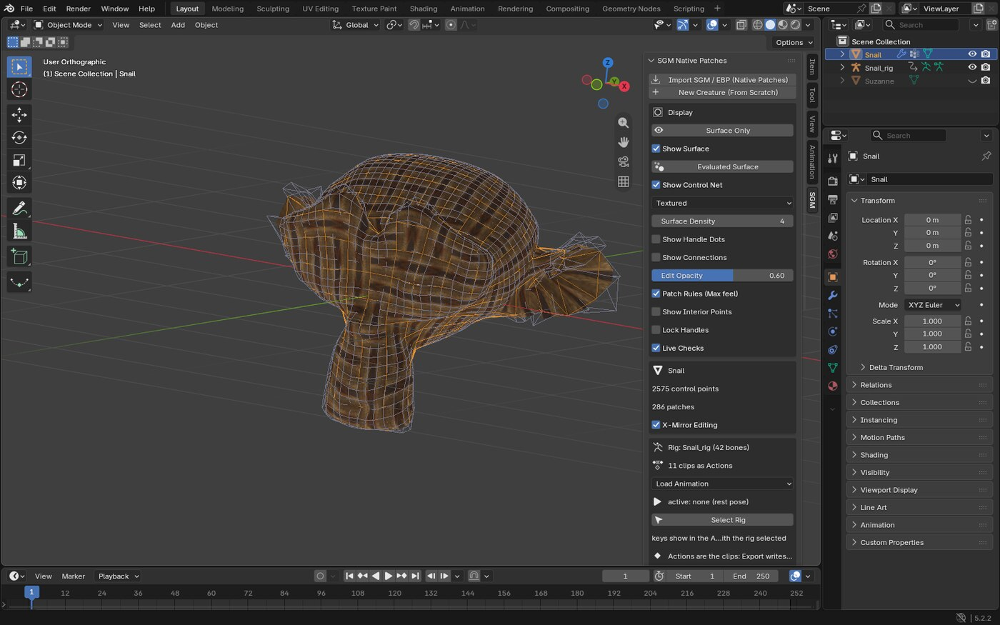
The report — kept on the creature as bz_last_fit — is the thing to read. It gives rms, p95 and max error
in millimetres and as a percentage of the mesh's size, which seeds QuadriFlow tried, how far off the layout was
before the fit (so you can see what the solve bought), and whether symmetry was kept. A symmetric mesh gives an
exactly symmetric creature: control points are paired through the layout's mirror faces.
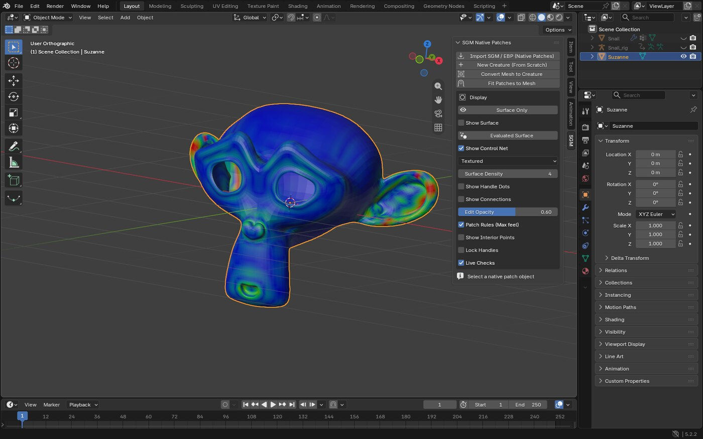
fit_error colour attribute (blue 0 to red 1 % of the mesh's size), read with Viewport Shading > Color: Attribute. It is the only thing the fit adds to your mesh. (The surface overlay was turned off for this shot — the add-on draws a creature's surface even when its mesh is hidden.)The budget, and the ceiling it is measured against
More patches follow the mesh more closely (Suzanne: 0.27 % of size at 286 patches, 0.09 % at 628) and cost more time — and more of the one resource the engine actually rations. The engine tessellates the whole patch mesh into one DirectX 8 vertex set of at most 12,288 display vertices, counted as
V = 9·P + 3·E_owned + C_owned ≤ 12288and a seam has one owner only when the two patches share a material, have overlapping smoothing groups and have both endpoint UVs within 1/16. So a patch costs 16 display vertices where its seams weld and 25 where it has its own texture island — which is exactly what Transfer Texture's per-patch atlas produces. The budget field says all this in its tooltip and the operator acts on it:
| Budget | What the fit does | Why |
|---|---|---|
| ≤ 263 | runs quietly | the creature still survives being combined with a stock creature |
| 264 – 491 | runs, warns | it will load, but the combiner adds a donor's limbs to the same patch mesh |
| 492 – 767 | runs, warns harder | at 25 vertices a patch it would not load; it only loads if its seams weld |
| > 767 | refused | even a perfectly welded mesh cannot fit in 12,288 vertices |
The budget that actually binds an authored creature is the combine one. ComboTest.exe builds one patch mesh from both parents: it exported a combine needing 12,258 display vertices and failed the same combine four patches bigger at 12,310. The dearest stock limb set costs 5,704 and the dearest stock torso 4,409, which leaves about 6,584 display vertices for your torso and 7,879 for your limbs — and where those vertices sit matters as much as how many there are. (Corrected 2026-11-17: the table and this paragraph gave 266 patches and 5,623 / 4,762 / 6,665 / 7,526, the numbers before the combine budgets were re-derived on 2026-11-15.) One fitted creature put 11,931 of its 12,135 vertices in the Torso limb, and a stock head then had nowhere to graft.
Fit to rig: the creature is riggable at once
A fitted net has no idea which part of it is a head. Two options do that work for you.
- Split into Limbs (on by default) gives the result the template's body plan instead of putting every patch in the Torso: the net is mapped into the template's frame, box onto box per axis, every control point takes its nearest eligible bone there (the Auto Skin rule — no stub bone, no end site) and every patch takes the limb of its points' bones. The report names the split, for example 115 Torso, 114 Head, 34 Tail, 21 LRLeg, 2 RRLeg on 20 bones, and which limbs got no patches.
- Without it, every other limb has no patches and its bones own no points — which is what the file calls a stub bone, 43 of a 48-bone scaffold, and then every bone operator refuses them ('head' is a stub bone).
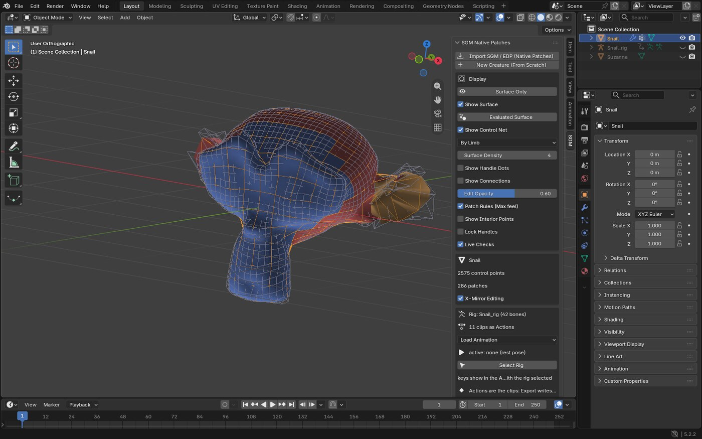
The bones themselves are not moved: the skeleton is still the template's, sitting wherever the template's bones sat. The report says so. Move it into the new body before you animate — by hand in Boner > Bones, or with Retarget / Landmark Retarget, which carry the rest bones with the surface (next chapter).
A mesh at creature scale
Blender's QuadriFlow cancels on a mesh that is merely small. Measured on one mesh at several scales: a 3.6 m Suzanne remeshes, and the same mesh at 0.11 m — what a real creature measures — cancels on all 8 seeds with it needs a closed, manifold mesh, on a mesh that is closed and manifold. The fit therefore retries on a copy scaled up by a power of two (so scaling the layout back is exact), keeps the factor for the other seeds, and says so in the fit line. QuadriFlow's layout is scale-invariant once it runs, so you get the layout you would have got at full size. If even the top of the ladder cancels, the refusal says size has been ruled out.
After the fit
- Validate (will it load?) — it judges the fitted creature exactly as it judges a stock one, and its display-vertex reading is the real answer to "is my budget all right".
- Boner > Bones to move the skeleton into the body, and to fix the skin where the nearest-bone rule guessed wrong.
- Boner > Connections to place the sockets: the rings are the template's idea of where limbs attach, not yours.
- Transfer Texture to carry a textured source's own skin onto the creature (see Textures).
- Trim Stray Surface if the template brought surface your target does not have (see Retargeting).
Retargeting: an existing creature takes another shape
Fitting a mesh (previous chapter) gives you a new patch net and nothing else — no limbs of your choosing, no sockets where you want them, a borrowed skeleton. Retargeting is the other way round: keep a creature that already works — its patch layout, limbs, connection rings, skeleton, skinning and clips — and make its surface take the shape of another mesh. Three tools do it, and each exists because the one before it has a limit you can measure.
| Tool | What it does | Reach for it when |
|---|---|---|
| Retarget Creature to Mesh | fits every control point to the nearest place on the target, and carries the rest bones | the target is the same animal in another shape |
| Create Landmarks + Landmark Retarget | warps the whole creature (and its rig) through a thin-plate spline you place by hand, then fits | parts have to travel ACROSS the body |
| Trim Stray Surface | finds the surface the target does not have, and selects, deletes or folds it | the donor has a limb your target has not |
All three are in the SGM panel's Tools box, and all three work on the stock cheetah below, against targets made from its own baked surface so that the numbers are checkable.

Retarget Creature to Mesh
- Bring the target into the file: one closed skin, in the same units. (Here: the cheetah's own bake, welded, with the legs 25 % further apart and the head 10 cm up.)
- Select the creature and press Tools > Retarget Creature to Mesh, then pick the Target Mesh by name in the redo panel.

The options that matter:
- Pin Rings (on): every connection ring's control points stay exactly where they are, so each socket keeps the stock ring geometry the combiner welds and scales at. Off, the rings follow the target and the report says the combiner will scale them and may warn.
- Scale to Target (on): the target is first aligned into the creature's frame (centred on the creature's surface bounding box, scaled by the bounding-diagonal ratio), so a model in other units fits the rig at its game size. The creature keeps its size; the report says the scale.
- Keep Symmetry (on): when the creature's net and the target are both X-symmetric, the fitted displacement is mirrored exactly, so the net stays as symmetric as it was.
- Move Bones (on): each rest bone is translated by the mean displacement of the control points it owns (a bone owning none follows its parent), through the same rest-edit path as editing the armature by hand — so the rig stays inside the new skin. Hierarchy, names and roll are untouched.
- Seam Smoothness defaults to 0, because stock seams are C0 by design.

One Undo restores the control points and the bind pose together, and Export then writes only the moved points and bones. A retarget to the creature's own bake moves nothing at all — 0 float32 changes, export byte-identical — which is what makes the tool safe to try.
The limit a closest-point fit has
A closest-point fit only sees displacement along the surface normal. Each control point looks for the nearest place on the target and goes there, so the creature can get fatter, thinner, longer or lumpier — but a limb cannot travel. Fitting a beetle to a pillbug scan left the beetle's head wedged into the pillbug's and its six legs bunched under the shell, although the scan-to-surface residual was a respectable 0.36 %. The fit was doing exactly what it promises; what it promises is not enough.
Create Landmarks and Landmark Retarget
Create Landmarks derives the creature's own landmarks and drops them as Empties named
LM_<name>, in a collection, at the creature's positions:
- per limb its tip (
LM_LFLeg— the head of the last bone of its chain; for the Head and Tail limbs, the surface point farthest along or against the creature's heading), - per limb its root (
LM_LFLeg_root— the head of the limb's root bone), - and
LM_Torso, the Torso's surface centroid.
You then drag each Empty onto the matching place on the target. An Empty may also name any rig bone
(LM_endfeeler_l) for a correspondence the limb names do not offer.
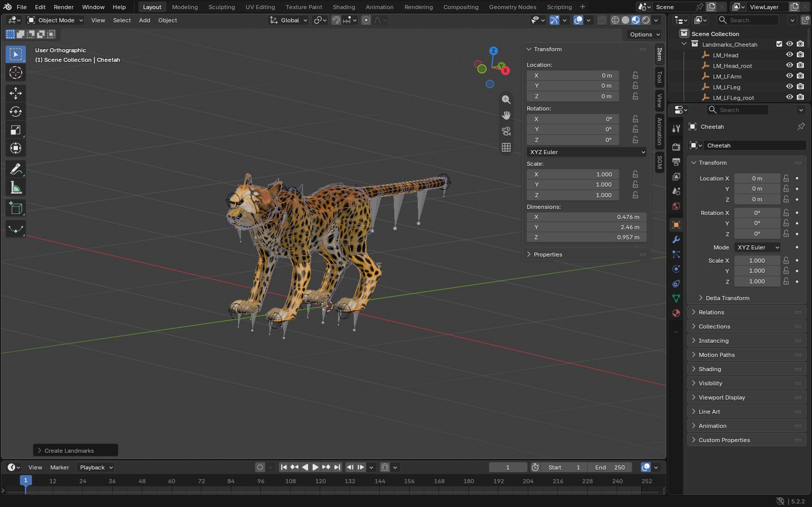
LM_Torso — and each has been dragged onto the matching place on the target.Landmark Retarget then reads them back by name, fits a 3-D thin-plate spline from the donor positions to yours, applies it to every control point and every rest bone's head and tail — so the rig travels inside the skin and turns with the warp instead of merely translating — and runs the closest-point fit from that start. Its own options:
- Warp Smoothing (0.001 of the landmarks' extent): 0 passes exactly through every landmark; the default smooths a rough placement, and the report says by how much it then misses.
- Warp Rings (on): the connection rings follow the warp and are pinned there. Off, every ring stays at the stock geometry.
- Symmetry, Scale to Target, Iterations, Seam Smoothness and Move Bones are the plain retarget's — and the symmetry is judged and mirrored against the original net, never the warped one.

The report ends with the honest number: coverage by limb, the fraction of each limb's surface samples still more than 2 % of the size from any target point, with a warning naming the limbs that still miss. On the measured case it is 0 % everywhere; on the pillbug it took the creature's surface off the scan from 28 % of its samples to 20 % (head 25 % → 12 %) and made the body run the scan's whole length — better, and still not right, which is what the number is for.
Trim Stray Surface
The fit measures target → surface. It never measures surface → target, so donor surface with no target under it — a beetle leg where the scan has no leg — is invisible to it. Retargeting the cheetah to its own bake with the tail cut off moves not one control point and reports rms 0.00 %, leaving 14 invented patches standing in the air.

Trim Stray Surface measures the other direction, per patch: the fraction of its 7 × 7 surface samples farther than Stray Distance (2 % of the creature's size) from the nearest target point. A patch is stray when that reaches Stray Fraction (half). The target defaults to the mesh the creature was fitted or retargeted to, which Fit, Retarget and Landmark Retarget all record. There are three actions:
- Select (the default): the stray patches' faces are selected and nothing else changes. The modder decides.
- Delete: through the one Delete Patch path — tables, rings, pool compaction — then Fill Hole on every hole it can take, so the mesh stays closed. It is two undo steps and the report says so, and a stray patch carrying a connection ring is refused by name.
- Collapse onto Target: the stray patches' control points move onto their nearest target point, so the sheet folds flat against the body instead of webbing across it. The patch table is never touched, so the creature stays exactly as watertight, skinned and combinable as it was — which is what you want for a limb the target does not have. Keep the Shared Edge (on) leaves a point that a patch which is on the target also uses exactly where it is, so nothing that fits moves.
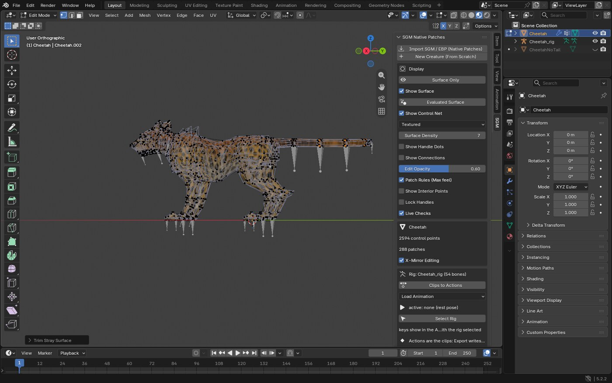
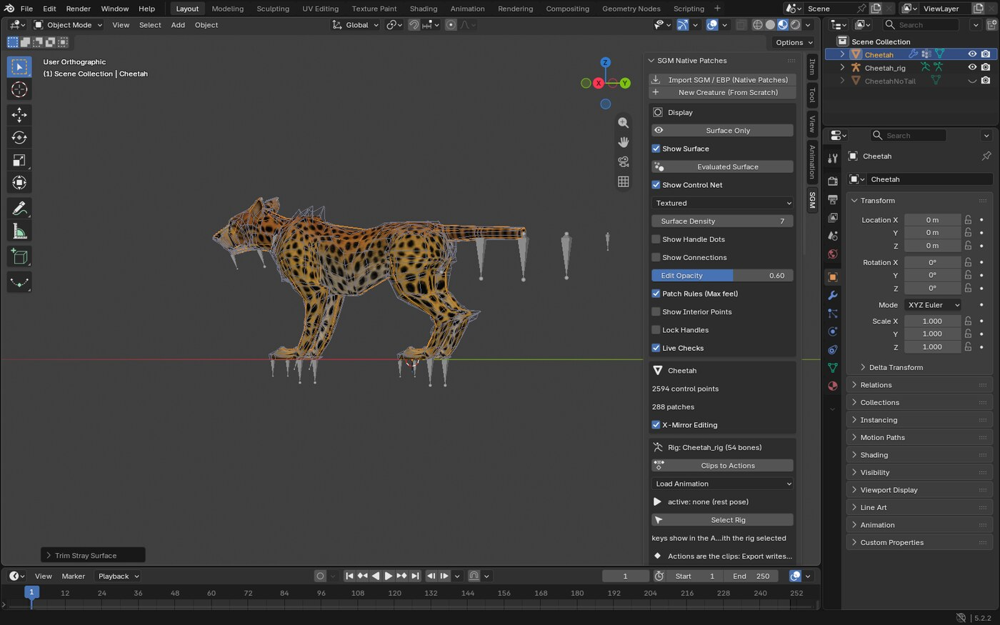
Validate carries a non-blocking read-out whenever a fit or retarget source is recorded and still in the file: WARN trim: N patch(es) of M are surface the target (X) does not have. Measured on a real conversion, the pillbug: 51 of 363 patches stray, 18.6 % of the surface samples off the scan — the front legs worst — and Collapse brought that to 9 patches and 8.9 %, watertight throughout, and the Object Editor loaded it.
Skinning and re-skinning
Skinning decides which bone moves each control point. This chapter uses the stock rhinoceros
(Assets/engine_stock/rhinoceros.sgm, 2594 control points, 288 patches, 54 bones) and the
Boner > Bones tab of the SGM sidebar panel: colour the surface by bone, pick a bone, move points
between bones, take points off a bone, let Auto Skin fill the gaps, use Blender's own vertex-group tools, and read what
Export says about it.
The model: one bone per point, no weights
An Impossible Creatures .sgm skins every control point rigidly to exactly one bone. There are no
blended weights in the file: each bone owns a contiguous range of points, and the point coordinates are stored in that
bone's bind-pose frame. The add-on keeps the same rule in Blender:
- Import builds one vertex group per bone and puts each control point in its owner's group at weight 1.0. That is what the Armature modifier deforms when you pose the rig.
- The add-on also keeps its own owner table (the "skin table"). Boner's tools write the table and the vertex groups together, in one undoable step.
- Export rebuilds the file from the table: points are re-sorted into contiguous bone ranges, each point is re-expressed
in its new owner's bind frame (so the creature's shape is unchanged), and every bone range follows the stock layout
(patch corners first in each range, their count in the bone record). Untouched creatures still export byte-identical;
a reskinned one reports
skinning: N bone range(s) rebuilt. - A control point that a patch uses must have a bone. The engine asserts it, so Export refuses such a point. (A point no patch uses may have no bone: woolly_mammoth ships with two.)
Seeing the skin: By Bone
- Import the rhinoceros (SGM Native Patches > Import SGM / EBP (Native Patches)) and open the sidebar (N) on the SGM tab.
- Scroll down to the Boner sub-panel and choose the Bones tab. Its Overlay dropdown is the same shading setting as Display > By Bone; with the link toggle next to it on (Follow Shading), switching Boner tabs switches the overlay too.
- Set the overlay to By Bone: the surface and every control point take the colour of the bone that owns them. A point with no bone is orange. The points toggle beside the link hides the point squares.

- Type or pick a bone in the Bone search field (here
head). The active bone's points turn bright and every other bone dims; the read-out below sayshead · 272 points · parent neck3.
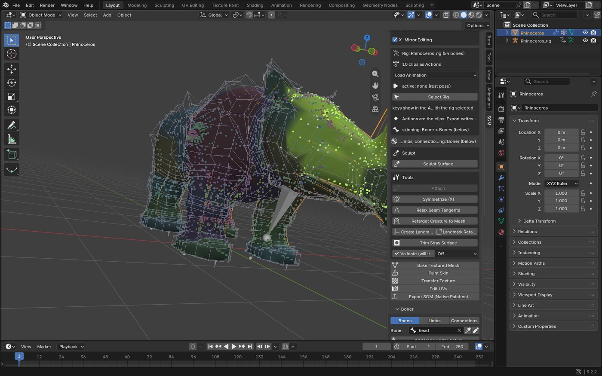
Bones with head as the active bone: the head is bright, the rest of the creature dimmed">head: bright against the dimmed body. The Bones tab shows its point count and parent.Selecting a bone's points, and Pick Bone
- Tab into Edit Mode. The Bones tab now shows Assign Selected, Select Points, Remove from Bone and the Select button next to the Unassigned count.
- Press Select Points: the active bone's control points are selected (a white ring marks each selected
point in By Bone). The status bar reports
'head' owns 272 control points (selected). Hold the operator's Extend option (in the redo panel at the bottom left) to add to the selection instead of replacing it.
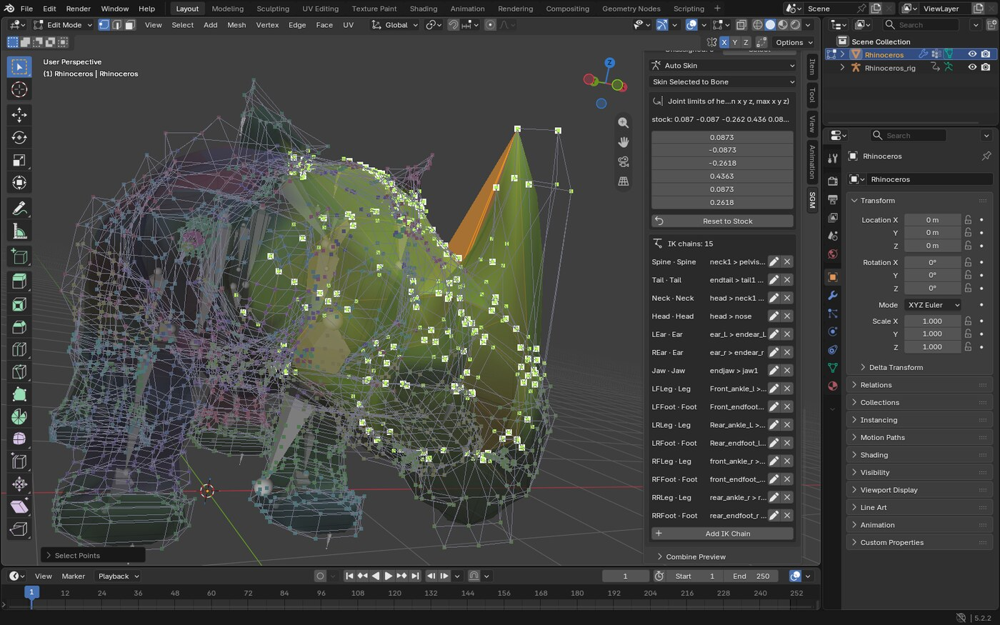
- To find out which bone a point belongs to, click the eyedropper beside the Bone field: Pick Bone.
It runs in the 3D Viewport as a modal tool: move the cursor over a control point and every point of that point's bone
lights up, with the bone's segment drawn; the viewport header reads
Pick Bone: click a control point or a bone. Esc cancels -- under the cursor: neck3. You can also hover a bone of the rig itself. Click to make it the active bone (the status bar saysActive bone: neck3 (50 control points)); Esc cancels and keeps the previous bone. An orange (unassigned) point is refused with control point N has no bone (orange): nothing to pick and the tool keeps running. Middle-mouse navigation passes through, so you can orbit while picking.

Moving points to a neighbouring bone
First look at how the stock skin deforms. Select the rig (Select Rig in the SGM panel), enter
Pose Mode and rotate the head bone (R). The bicubic surface follows the pose
live, because the overlay reads the evaluated mesh.

head and its children move; the neck stays put and the surface bends at the boundary.- Reset the pose (Alt+R), select the creature again and Tab into Edit Mode.
- Select the control points you want to move (here 20 points in the lower part of the neck that belong to
neck3). - Make the target the active bone (
head, via the Bone field or Pick Bone) and press Assign Selected. The status bar reportsAssigned 20 control points to 'head' (20 changed bone)and the points take the head's colour at once. The read-out now sayshead · 292 points. Skin Selected to Bone (the menu at the bottom of the tab) does the same but lets you choose the bone from a list instead of making it active first.
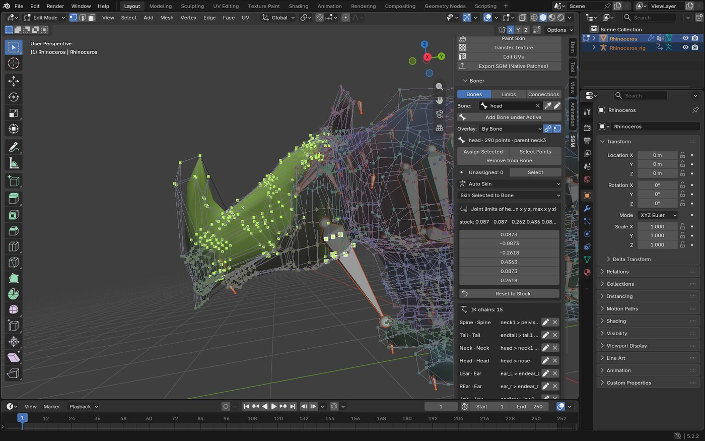
head (bright, with their selection rings). Owner table and vertex groups changed together; Ctrl+Z brings both back.- Pose the head again: the reassigned neck points now swing with the head, so the surface bends further down the neck. This is the whole effect of skinning: a point follows exactly one bone, so moving it between bones moves where the surface hinges.
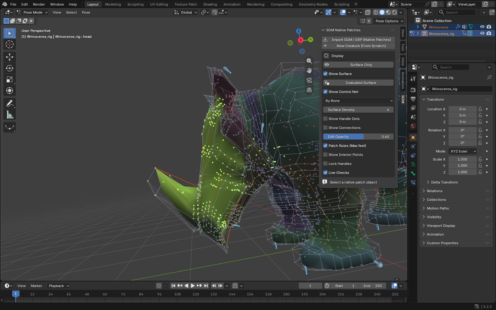
head and pull the lower neck with it.Taking points off a bone: Remove from Bone, Select Unassigned, and the export refusal
- Make
ear_Lthe active bone, select its points (Select Points) and press Remove from Bone. The points now have no bone: they turn orange, the read-out drops toear_L · 0 points, and the Unassigned row turns red:Unassigned: 50 (50 on patches: Export refuses). The status bar says Removed 50 control points from 'ear_L'; 50 patch points now have no bone: Export refuses them until they are assigned (Select Unassigned, Auto Skin). Selected points of other bones are left alone (the report counts them).

- Try Export SGM (Native Patches) now. It is cancelled with:
50 control points used by patches have no bone (points 0, 1, 2, 3, 4, 5, ...): the game needs every patch point skinned to a bone. Boner > Bones > Select Unassigned selects them (orange in the By Bone overlay); assign them to a bone or run Auto Skin
Validate reports the same asEXPORT BLOCKED: 50 control points used by patches have no bone .... - Press Select next to the Unassigned count (operator Select Unassigned): exactly the orange
points are selected, and the status bar counts them (
50 control points have no bone (50 used by patches)). Now either make a bone active and press Assign Selected, or let Auto Skin decide.
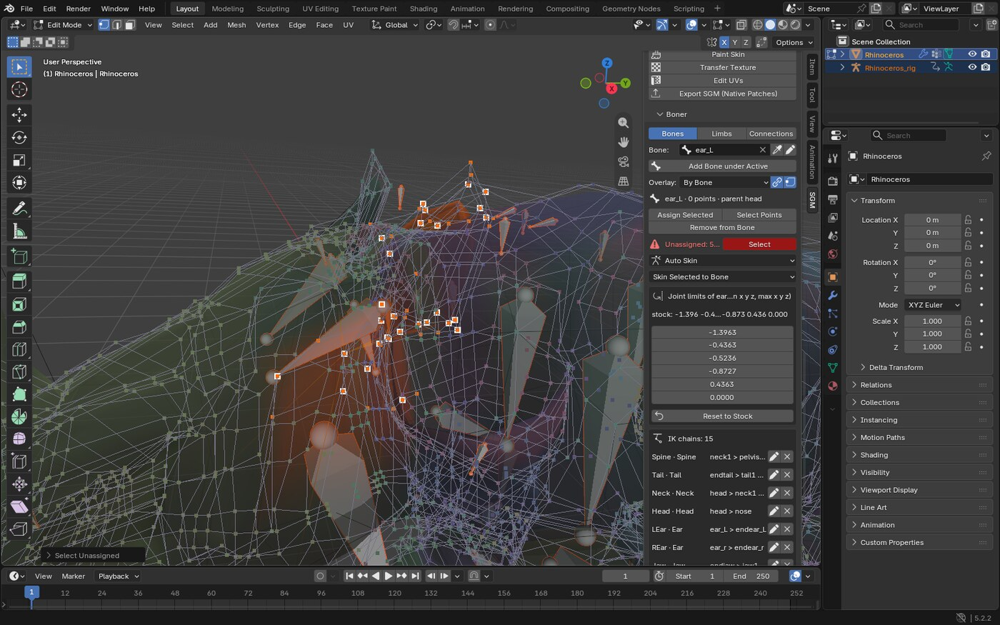
Auto Skin
Auto Skin is a menu with four targets:
- Selected, else Unassigned (the default): in Edit Mode the selected points, or every unassigned point when nothing is selected. In Object Mode the selection is not shown, so it always means Unassigned.
- Selected: the selected points (Edit Mode only; refused in Object Mode).
- Unassigned: every point with no bone.
- Reset All: every control point, replacing the skin the creature has (Boner's Reset).
Its rule: each point goes to its nearest bone segment, where a bone runs from its head to its nearest child's
head and a leaf bone is its head alone. It never uses a stub bone (the wing and arm socket bones, on
the rhinoceros SWing1_L, swing1_r, Top_Wing_L, top_wing_r,
front_arm1_l, front_arm1_r; no stock stub bone owns a point), never an end-site
bone (a name token starting with end: endjaw, endtail,
endear_L, front_endleg_r, ...; none of the 611 on the base game owns a point) and never a bone
whose Deform is off. Bones you added with Add Bone count as segments and targets like any other.
Then, with Handles Follow Corners on (the default; it is in the operator's redo panel), every handle and interior point takes the bone of its patch's nearest corner, as on every stock creature: in a battle the game skins each patch with its four corner bones only, so a handle on another bone would bend the patch in the army builder and the Object Editor but not in battle. (Added 2026-11-17: the option exists since 2026-11-15; the counts below were measured before it, with the nearest-segment rule alone.)
- With the 50 ear points still selected, run Auto Skin > Selected, else Unassigned. On the
rhinoceros 48 of them go back to
ear_Land 2 toantler_l(the nearest segment), the Unassigned count returns to 0 and Export works again. The report ends with Check By Bone and fix by hand: Auto Skin is a first pass, not Relic's hand skin.

ear_L, 2 on antler_l).- Reset All re-derives the entire skin from the skeleton. On the rhinoceros it agrees with the stock skin on 50.7% of the points (52% on average over the base game, 60% on the cheetah) and uses 34 bones, so expect to fix seams by hand afterwards. Choose it by name: in Edit Mode with every point selected, the other targets are refused and the message asks for Reset All, so an accidental select-all cannot wipe the skin.

Blender's own way: vertex groups and weight painting
The rig's vertex groups are the skin as Blender deforms it, and the add-on reads them live. You can therefore use Blender's own tools, as long as the result is still rigid:
- In Edit Mode select points, choose a bone's group in the Object Data properties (or Ctrl+G
> Assign to Active Group), remove them from the old group and assign them to the new one at weight
1.0. The Bones tab read-outs and By Bone show the new owner immediately (below, twelve nose-tip points
moved to
jaw1: the read-out saysjaw1 · 170 pointsalthough the file gave it 158). - Export adopts such a rigid reassignment (one bone group at weight 1.0) into the skin table and writes it, and says so in its report. The next Boner edit (Assign Selected, Remove from Bone, Auto Skin, Extrude Patch) adopts it too, so the two ways of editing do not fight.

jaw1's. Export adopts it.- A blended point (in two groups, or a partial weight) cannot be stored. Give one point a 0.5 weight in
jaw1on top of itsnosegroup and the Bones tab shows a red alert: 1 points have blended vertex-group weights: Export refuses, and skin edits stop until they are Undone or assigned. Export is cancelled with:the rig's vertex groups skin control points the .sgm can't store (it skins each point to one bone at full weight): 1 with blended or partial weights (point 1372: nose 1.00, jaw1 0.50). Give each point exactly one bone group at weight 1.0 (Assign Selected to Bone does), or Undo the weight edit
and a Boner edit on other points refuses as well, rather than silently rewriting the groups from the stale table:vertex-group edits on control points outside this edit can't be kept by the add-on's skin table (it skins each point to one bone at full weight): 1 with blended or partial weights (point 1372: nose 1.00, jaw1 0.50). This edit would overwrite them, so it stopped. Undo the weight edit, or include those points in the edit and assign them to one bone
- To fix it, either Ctrl+Z the weight edit, or select the blended point and press Assign Selected: an edit that includes the point makes it rigid again (one group, weight 1.0). A point taken out of every bone group with Blender's tools shows as unowned (orange): Export refuses it (in no bone's vertex group, so Blender leaves them at rest), Boner edits elsewhere stop the same way, and Select Unassigned finds it so an Assign Selected or Auto Skin can give it a bone.

Export: the summary line
Press Export SGM (Native Patches) once every patch point has a bone. The report line (also stored on
the object as bz_last_export) names what changed; for this chapter's edits it reads
skinning: 35 bone range(s) rebuilt (2594 points re-encoded). The count is the number of bones whose
point range moved: a reskin re-sorts the whole pool, so nearly every bone that owns points gets a new range, and every
point is re-encoded in its owner's bind frame. Untouched creatures still say byte-identical to the source.
A creature grown with Extrude Patch reports geometry rebuilt: ... instead, with the bone ranges rebuilt
inside it. Undo restores both the table and the groups, so an edit undone exports the original bytes again.
Skinning and combining (ComboTest)
The combiner grafts a limb onto another creature's torso by the limb's bone list. A limb's patch points should belong
to the limb's own bones, to one of the canonical torso bones (pelvis, spine1,
spine2, spine3, neck1, tail1) or to its connection's host bone. If
a reskin gives a limb's points to a Torso bone outside that list, or to a bone in no limb, Validate adds
a STOCK line of the form STOCK limb 'X': its patches use control points of B (N points, in Torso), not one of its
bones: grafted onto another torso, ComboTest.exe puts those points on the root bone (and, for a leg, fails an assertion
with no export). Every base-game limb obeys this (0 hits on 61 creatures); the fix is to skin the points to one of
the limb's bones or to add the bone to the limb (Boner > Limbs > Add Active Bone). The Limbs
tools also warn when a bone-list edit newly creates such stray points.
Two related STOCK lines come from the same tab: skin points to a stub bone (SWing1_L on the rhinoceros)
and Validate says STOCK stub limb 'Rhinoceros_LSWing' (no patches): its bone SWing1_L (6 points) owns control
points: no base-game stub bone owns any (Boner > Bones: move those points to a bone of a limb with patches);
empty a connection's host bone and it says STOCK connection 'X': its host bone 'Y' owns no control points.
STOCK lines never block Export (Tellurian creatures break them and load), but a creature that breaks them will not
combine like a stock one.
Re-texturing and texturing from scratch
This chapter re-skins the stock rhinoceros (Assets/engine_stock/rhinoceros.sgm) and then textures a
creature made with New Creature (From Scratch). Everything happens on a normal import: the textures
come in as Blender images, you paint them or replace their pixels, you move the per-patch UVs in Blender's UV Editor,
and Export writes only what you changed back into the .sgm.
How textures live in the .sgm
A creature file embeds its own textures: one TXMP record per texture, each a palette of at most 256
colours plus a full mip chain (the image, then every halving down to 1x1) of palette indices. The rhinoceros carries
seven: rhino01.bmp 256x256 (body), rhino02.bmp 128x128 (head), rhino03.bmp
64x128 (tail), rhino04.bmp 128x256 (legs), rhino05.bmp 64x64 (feet),
rhino08.bmp 32x32 (ears) and rhino09.bmp 32x64 (mouth). Sizes are powers of two.
Each material names the texture it draws with (its TXTR tag) and a base colour
(DIFC); several materials may share one texture (the rhino's front and rear legs both use
rhino04.bmp). Each patch stores a material index, so the material slots are positional: patch
n draws with slot material_index[n], and the slot order in the file is what Blender shows.
On import every texture becomes a packed Blender image named SGM_<file> (for example
SGM_rhino02.bmp), kept with a fake user so a saved .blend holds it. Pure magenta
(255, 0, 255) is the engine's colour key: those texels are transparent in game (feathers, fins,
cut-outs). The importer gives them alpha 0 and the overlay and the baked materials clip them, so they read as holes
rather than pink.
Seeing the textures: the live overlay
- SGM Native Patches > Import SGM / EBP (Native Patches), pick
rhinoceros.sgm. - In the Display box the shading selector is on Textured by default: the live bicubic surface overlay draws the creature's real skins while you edit (Solid viewport shading is enough; the overlay does its own texturing).
- Switch the selector to Plain, By Limb or By Bone when you need geometry or ownership colours instead; switch back to Textured to check the skin.

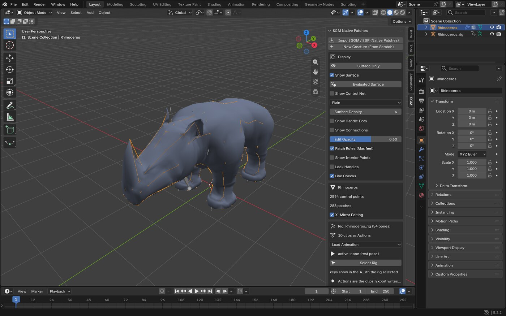
To look at a texture itself, change any area to an Image Editor and pick the
SGM_… image in its header.
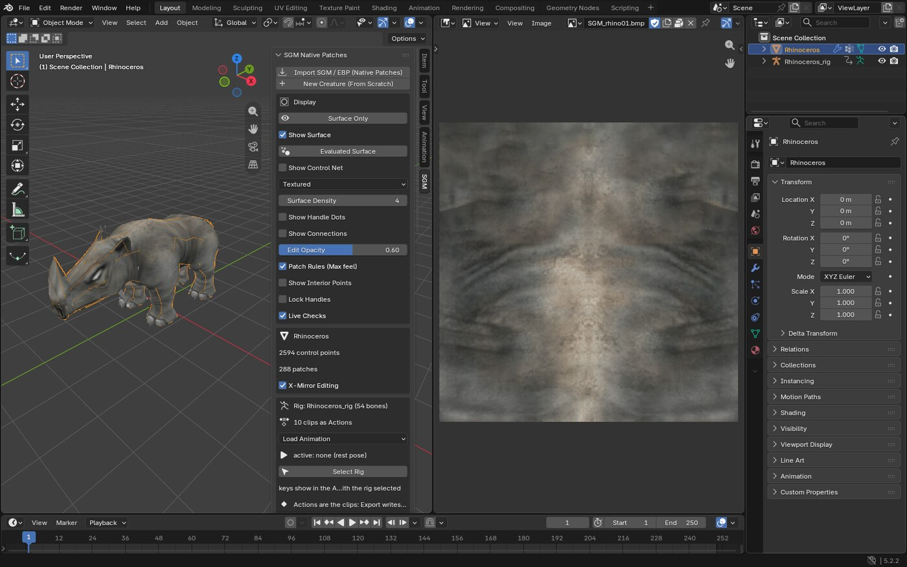
SGM_rhino01.bmp, the body skin, in an Image Editor.Paint Skin: repainting a texture
- With the creature active, press SGM Native Patches > Paint Skin. It bakes the surface to a
real mesh named
<creature>_baked(at the current Surface Density, with the creature's materials, textures and UVs, and the engine's normals), makes that mesh active and enters Texture Paint with the paint mode set to Material, so every brush stroke lands on the image of the material under the brush. Bake switches the viewport to Material Preview; Solid shading with Color: Texture (viewport shading popover) shows the same images faster. - Paint with Blender's brushes on the mesh, or in the Image Editor (set its mode to Paint and pick the image). To make a region transparent in game, paint it pure magenta (255, 0, 255); to fill a hole, paint any other colour over it.
- Press Tab back to Object Mode when done. The baked mesh is a plain Blender mesh: it is only the painting surface, never exported.
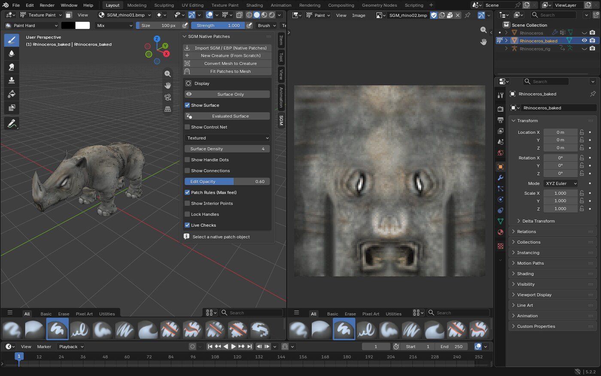
rhino02.bmp open in the Image Editor's Paint mode.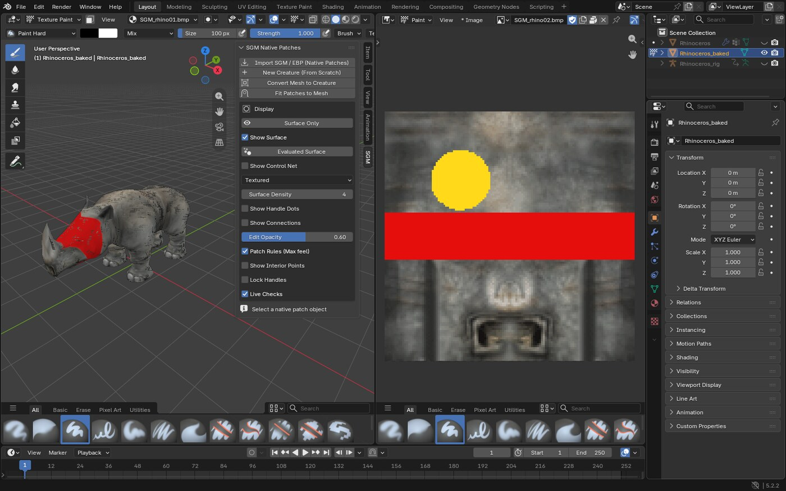
rhino02.bmp: the head shows them at once.Export: only painted textures are re-encoded
- Select the creature again (the SGM panel says Select a native patch object while the baked mesh is active), then SGM Native Patches > Export SGM (Native Patches).
- Read the report line (status bar and Info editor). It ends with what changed, for example
textures: 1 edited (rhino02.bmp: 3812 texels). An untouched creature reportsbyte-identical to the source.

The add-on compares each image's pixels with a snapshot taken at import, so an image you never painted keeps its source bytes exactly. A painted image is re-encoded with its source palette: unchanged texels keep their palette index in every mip, a painted colour takes an existing entry or a free one (up to 256; entries no texel of any mip uses are recycled), and only the lower-mip texels over painted areas are recomputed. The rhino head above went from 183 to 185 palette entries. An image that changed size or is no longer a power of two is re-quantised whole (a fresh median-cut palette), and the report counts every texel.
UV editing: the UV cage
The file stores four texture coordinates per patch, one per corner control point; the engine interpolates across the patch. Edit UVs turns that table into a mesh you can edit with Blender's own UV tools.
- With the creature active (Object or Edit Mode), press SGM Native Patches > Edit UVs. A
mesh named
<creature>_UVcageappears with one quad per patch (288 for the rhino) and a UV layerSGM_UVholding the corner UVs. The cage becomes the active object. - Press Tab on the cage, select faces (A for all), and turn an area into the UV Editor: the selected quads show there. Pick the texture in the UV Editor's header to see them over the skin. Move, rotate and scale the UVs as on any mesh (G, R, S; R 90 for a quarter turn).
- Tab back to Object Mode and press Apply UVs (shown in the SGM panel while a cage exists; works with the cage or the creature active). The overlay redraws with the new mapping. Export reads the cage on its own too, so Apply UVs is optional before an export.
- Export reports
UVs: 62 patches: only patches whose corner UVs differ are rewritten; untouched patches keep their bytes.

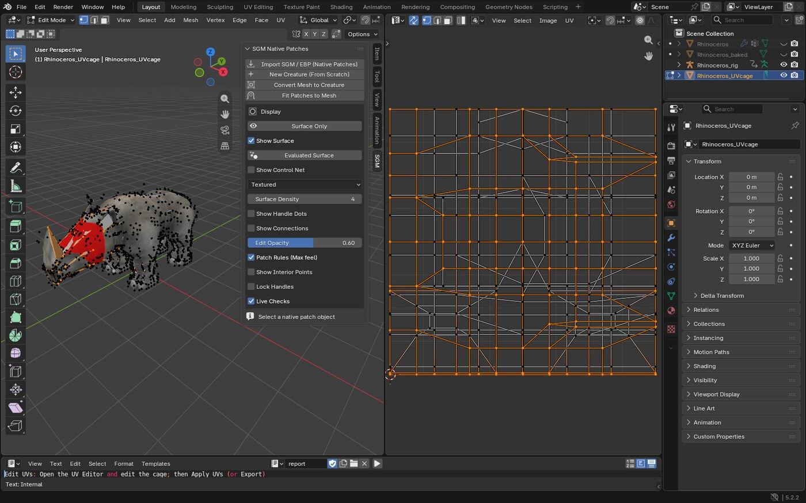

UVs: 62 patches together with the earlier paint.Texturing from scratch
A creature needs one texture per material it draws with, each a power-of-two image (256x256 is the usual body size; smaller for small parts). The add-on cannot add material slots or textures to a file, so start from a creature that already has the slots you need and paint or replace their images.
- SGM Native Patches > New Creature (From Scratch) (also Add > Impossible
Creatures Creature (From Scratch)). Set Name, keep Standard Clips,
IK Chains and Clips as Actions on, pick where to write the
.sgm(that file is the creature's source, like an import). - The new creature ships one 256x256 texture,
<name>01.bmp, used by every material slot: a blue/orange checker (with the name written across it when Pillow is available to Blender's Python), so you can see where each patch lands before you paint. - Paint Skin and paint it over, as above. Export re-encodes it.

guidezilla01.bmp, a checker that shows where the UVs land.Replacing the image with an external PNG. Export only knows the images it stamped at import (one per texture index), so a file you open becomes a new image that nothing exports. Copy its pixels into the creature's image instead:
- In an Image Editor, Image > Open your PNG (or run
bpy.data.images.load(path)). - Make it the creature image's size if it is not already (the Image Editor's Image > Resize,
or
img.scale(w, h)). Keeping the size lets Export keep the palette-preserving path; a different power-of-two size is re-quantised whole. - Copy the pixels in the Python Console:
src = bpy.data.images["skin.png"]; dst = bpy.data.images["SGM_guidezilla01.bmp"]; dst.pixels = src.pixels[:](for large imagesforeach_get/foreach_seton a float buffer is faster). Only the RGB channels are exported; paint magenta where you want transparency. - Export. The report counts every texel (
guidezilla01.bmp: 65536 texels) and the texture gets a fresh 256-colour palette.
SGM_guidezilla01.bmp: the scaffold wears it at once.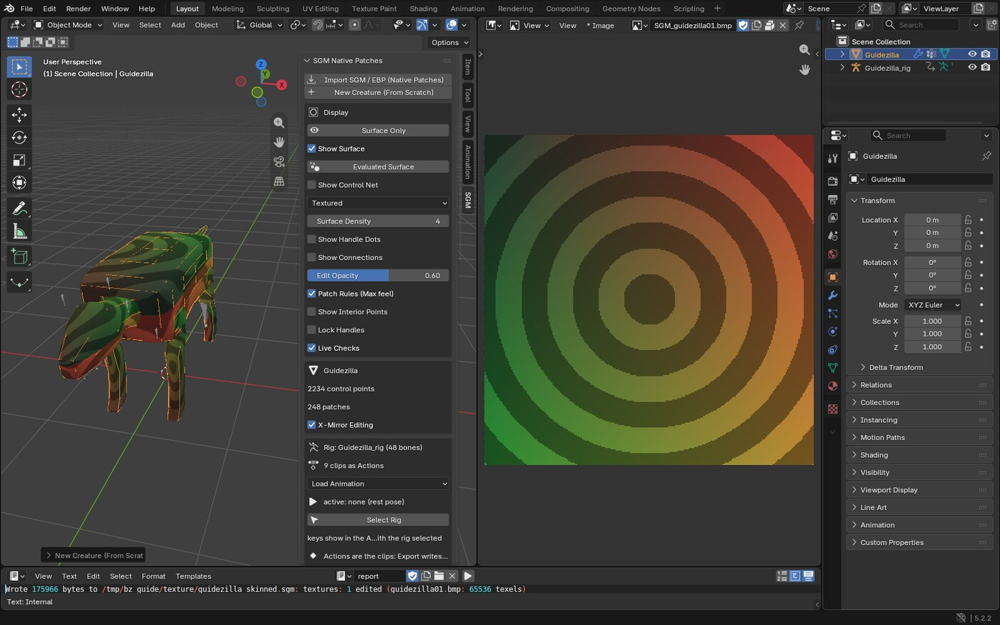
Transfer Texture: a source mesh's own skin
A creature fitted or retargeted from a textured scan has the scan's shape and the template's skin. Transfer Texture (next to Paint Skin) gives it the scan's skin instead, with nothing to unwrap.
- Bring the textured source into the file — the mesh you fitted from, an imported
.glb, or (as here) the creature's own Bake Textured Mesh. It needs a UV layer and an image texture. - Select the creature, press Transfer Texture, and set Source Mesh in the redo panel. Fit and Retarget record the mesh they used, so the field is usually already right.
- The tool lays out one atlas cell per patch — an N × N grid, N = ⌈√patches⌉, each cell inset by a Gutter of a few texels — and writes the four corner UVs the file stores. The engine interpolates those bilinearly across the patch, so a cell per patch is an exact mapping and a seam between patches is just a seam between cells.
- It then tessellates the creature's exact surface with those UVs as a bake target and bakes the source's image onto it with Cycles (CPU), EMIT, selected-to-active — emission only, so neither the source's own lighting nor the scene's plays any part — from a cage pushed Cage Extrusion (2 % of the creature's size) out along the surface, looking Ray Distance (4 %) in for the source.
- The atlas becomes the creature's one texture: every material slot points at it, and Export re-encodes it through the same codec as any other skin (a 256-colour TXMP with its mip chain).


Coverage is the honest number
A texel whose ray found nothing stays at alpha 0, and source coverage is measured on that raw bake, before the misses are filled (a dilation carries the cell edges outward so the gutters hold the cell's own colour and bilinear or mip sampling never reads black; whatever is still unhit takes the mean hit colour). So coverage tells you how much of the creature is actually on the source. A creature transferred from its own mesh reaches 100 %. A retarget whose donor has legs where the scan has none reached 51 % at the default ray distance and 84 % at 24 % — the rest takes its neighbours' colour, and the report says so and names Ray Distance.
And the honest cost
A per-patch atlas is exactly the case in which no seam welds. The engine puts the whole tessellated
patch mesh in one vertex set of at most 12,288 display vertices, counted as
V = 9·P + 3·E_owned + C_owned, and a seam has one owner only when the two patches share a
material, have overlapping smoothing groups and have both endpoint UVs within 1/16. Per-patch islands break
the last condition everywhere, so:
| UVs | Cost per patch | Patches that fit |
|---|---|---|
| continuous across seams (stock creatures) | 16 display vertices | 767 — measured: 754 load, 758 crash |
| one texture island per patch (this tool) | 25 display vertices | 491 — measured: 490 load, 492 crash |
On one fixed 754-patch cage, V = 12,287 loads and V = 12,291 crashes — identical geometry, only the UVs differ. So Transfer Texture raises the price of every patch from 16 to 25 and cuts the loadable patch count by about a third, and the combine budget (about 263 patches for a torso; corrected 2026-11-17 from 266) by the same proportion. It is the right tool for a fitted scan of a few hundred patches; it is not free. Validate reads out what your creature actually costs.
Refusals and gotchas
Export refuses, with the reason and the fix, rather than write a creature that lost an edit:
- Missing painted image. Deleting a
SGM_…image, or renaming it after its stamp was lost, gives texture N's image '…' is missing (renamed without its stamp, or deleted): its paint can't be read. Rename it back, undo the deletion or re-import the creature. A renamed image that still carries its stamp is found and exported. An image whose pixel data is gone (has no pixels) refuses the same way. - Stale UV cage. A cage built before the patch table changed (an Extrude Patch since) no longer has one face per patch: the UV cage '…' has N faces for M patches: press Edit UVs to rebuild it, or delete the cage. Edit UVs rebuilds it, keeping the old cage's edits when they still fit.
- Extra modifiers. Any modifier on the creature other than its own Armature (a Subdivision, a Mirror, a Displace…) refuses: Export writes the control points, not a modifier's result. Apply or remove them. The same goes for an object transform (clear it with Alt+G / Alt+R / Alt+S) and shape keys.
- Wrong object active. The baked paint mesh and the UV cage are plain meshes: with one of them active the SGM panel shows Select a native patch object and there is no Export button (Apply UVs still works from the cage). Select the creature.
- Magenta is transparent. A brush stroke of any other colour over a keyed (transparent) region makes it solid in game; only pure (255, 0, 255) keys out. Painting near a cut-out edge with a soft brush leaves near-magenta fringe texels that are not keyed.
- Hidden creatures still draw. The overlay draws a creature's surface even when its mesh is hidden (that is what Surface Only relies on). To get a creature out of the view, move it to another collection and exclude that, or delete it.
- Saving the .blend. Painted images are re-packed before the file is written and every skin
image keeps a fake user, so a reopened
.blendexports the paint. Do not unpack or purge them.

Playing, editing and creating animations
An Impossible Creatures creature carries its animation clips inside the .sgm: Idle1,
walk, Melee1, StumbleDie and so on, each a set of per-bone tracks. The add-on turns every
clip into an ordinary Blender Action on the creature's rig, so you play, scrub, edit and author
clips with Blender's own animation editors, and Export SGM (Native Patches) writes the Actions back
as clips. This chapter uses the stock rhinoceros (Assets/engine_stock/rhinoceros.sgm: 54 bones, 10
clips) and never writes into Assets/; exports go to a folder of your own.
What import gives you: one Action per clip
Import SGM / EBP (Native Patches) has a Clips as Actions option, on by default. With it, every
clip of the file is baked into a named Action on the rig (Rhinoceros_rig): one key per clip frame on
every bone (location, quaternion rotation, scale), linear interpolation like the engine, and each Action is parked on
its own muted NLA track. Muted means nothing plays until you choose a clip; the tracks just keep the
Actions visible in the Action Editor, the Dope Sheet and the NLA editor, and mark them as belonging to this rig.


Playing and scrubbing a clip
- With the creature (
Rhinoceros) active, open the SGM sidebar tab (N) and pick a clip from Load Animation. It makes that clip's Action the rig's active Action, sets the scene frame range to the clip (Start 1, End 25 for Melee1), sets the scene frame rate to the clip's, and jumps to frame 1. The rig box now says active: Melee1. - Press Space to play, or drag the playhead in the Timeline to scrub. The bicubic surface follows the rig, so the live overlay and the control points move with the pose.
- Pick another clip from Load Animation at any time; or, with the rig active, choose it in the Action Editor's action selector. Loading a clip never re-bakes anything: it only activates the Action that already exists.


Editing a clip in the Dope Sheet or Graph Editor
Blender's animation editors show the keys of the selected object, and the Actions live on the rig, not on the creature mesh. So:
- Click Select Rig in the SGM panel (it makes
Rhinoceros_rigthe active object). To edit the creature's geometry again later, select theRhinocerosobject again. - Turn the Timeline area (or any area) into a Dope Sheet, mode Action Editor: the active Action (Melee1) and its keys appear, grouped per bone. The Graph Editor shows the same keys as curves.
- Switch the rig to Pose Mode (Ctrl+Tab with the rig active), go to a frame, select a bone (click it, or pick it in the Outliner), transform it (R X 40 rotates it 40 degrees about its local X) and press I > Rotation to key it. Auto Keying (the record button in the Timeline header) works too. Moving, scaling or deleting keys in the Dope Sheet / Graph Editor is an edit just the same.
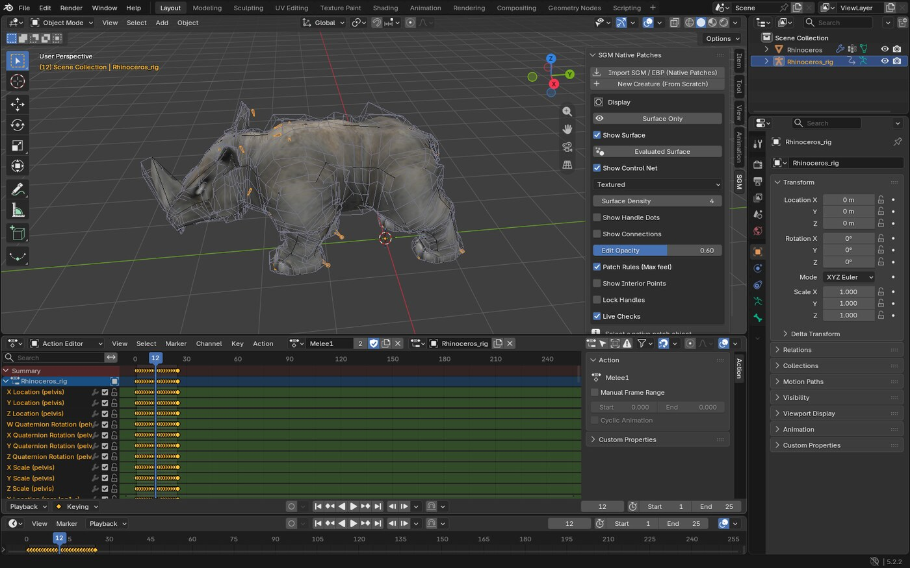
The example below is what a script did for the screenshots: in Pose Mode at frames 9, 12 and 15 the head
bone was rotated a further 20, 40 and 20 degrees about its local X axis and keyed with I. The equivalent by
hand is the same three rotate-and-key operations.

Export: untouched clips keep their bytes, edited ones are re-encoded
- Select the creature object (
Rhinoceros) again and click Export SGM (Native Patches) in the SGM panel. Pick a file of your own in the file browser (never the stock file you imported) and confirm. - Read the report in the status bar or the Info editor. It ends with the clip summary, here clips: 9 kept, 1 written: nine Actions still hash exactly like at import, so their source clips are copied byte for byte; the edited Melee1 Action was re-encoded from what Blender plays.


Checked with ICParse on the file above: the nine kept clips' ANIM forms are byte-identical to the stock
file, the control points and bone rest transforms are identical, and decoding the re-encoded Melee1 gives the head
rotated exactly 20.0 / 40.0 / 20.0 degrees from the stock pose at frames 9 / 12 / 15 and 0.0 degrees at the
untouched frames.
Creating a new clip
- Make the rig active (Select Rig) and enter Pose Mode. In the Action Editor header click New: a fresh Action is created and assigned to the rig (it becomes the rig's active Action). Name it in the same field.
- Set the scene range to the clip you want (Start 1, End 21 for a 20-interval clip), and set Output > Frame Rate to 30 (the stock clips' rate; Load Animation sets it when you play a stock clip). A new Action has no rate of its own, so Export uses the scene's.
- Key the bones: at frame 1 select the bones you will animate and key their rest (I), go to a middle
frame, pose them, key again, and key the rest pose again at the last frame so the clip loops cleanly. The screenshot
Action keys
head,neck1,jaw1andtail1at frames 1, 11 and 21. - Leave the new Action as the rig's active Action (or push it down onto the NLA and mute the track, see the warning below), select the creature object and Export SGM (Native Patches). The clip is appended under the Action's name, sampled on the Action's own frame range: keys from 1 to 21 give a clip of 20 intervals.
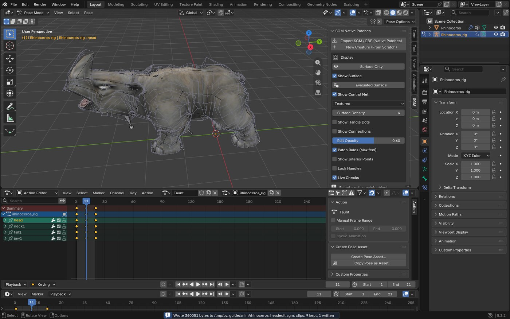
Renaming and deleting clips
- Rename the Action (double-click its name in the Action Editor header, or in the Outliner in
Blender File display mode under Actions; renaming an NLA track or strip does not rename the Action) and the
clip is written under the new name, re-encoded; the
old clip name is dropped. A rename means the name differs from the one the Action was created with, so an Action
Blender had to call
fly.001on import still writes clipfly. Renaming it back restores the kept clip. - Delete the Action datablock (Outliner > display mode Blender File > Actions > right-click > Delete) and its clip is dropped from the export. Unlinking it with the X next to the action selector is not deleting: an imported clip's Action still exists (fake user), still sits on its NLA track and is stamped for the rig, so it is still exported. Deleting its NLA track alone does not drop it either.
For the second export below, OAttack1 was renamed to Gore, Crouch was deleted, the new Taunt stayed active, a copy Taunt_sketch was left held only by its fake user, and the walk NLA track was unmuted on purpose. Tools > Validate (with the creature active) already tells the story before writing anything:

ICParse reads the second file back as Idle1, Melee1, MeleeLow1, Run, StumbleDie, StumbleGetup, walk, Charge, Taunt (20 intervals, 30 fps) and Gore; the seven kept clips are byte-identical to the stock file.
Rules the engine imposes (and the add-on follows)
- A bone with no keys stays at rest under its parent. The game holds a bone a clip has no track for
at its bind-local transform (measured in the Object Editor), which is also what Blender shows for an unkeyed bone.
When a clip is re-encoded, every transform channel its Action does not key is sampled at rest, whatever pose
an earlier playback or a hand pose left on the bone; the rig's pose is put back afterwards. So a new clip that keys
only the head keeps every other bone at its rest, no matter what was playing before you exported. In the Taunt clip
above, an unkeyed bone (
rear_foot_r) decodes to exactly its bind pose at the middle frame. - A clip is one Action, not an NLA blend. Export samples each Action alone with the NLA muted. An unmuted NLA track triggers NLA track(s) walk are not muted: Export writes each Action alone (a clip is one Action, not an NLA blend); mute it in the NLA editor (the checkbox on the track) to silence the warning.
- Keys on a bone the rig does not have (a bone deleted, or renamed with Blender's own rename after the Action was last in use) are a warning: the clip is written without those keys. Rename bones with Boner > Bones > Rename Bone, which rewrites every Action's F-curves; a rename alone never re-encodes a clip.
- One clip name per Action. Two Actions that would write the same clip name make Export refuse until you rename one.
- Actions belong to their rig by identity, so importing the same creature twice, or re-importing after deleting one, still exports each byte-identical; an Action tagged for another (earlier) rig is ignored with a warning.
Bones, limbs and connections (Boner)
A creature loads in the Object Editor when its patches are watertight and rigged. It combines in the game when its limbs, connections and skeleton follow the rules the combiner (ComboTest.exe, the same code the game runs) hard-codes. Those three tables are what Relic's Boner tool edited, and what the Boner sub-panel of the SGM sidebar edits here: N sidebar > SGM tab > Boner, with Boner's three tabs Bones | Limbs | Connections. Every edit is one undo step (Ctrl+Z / Ctrl+Shift+Z work in Object and Edit Mode), refusals change nothing, and an untouched creature exports byte-identical.
The model in one minute
- Limbs are named groups of patches with a classification and a bone list. The classification is Boner's checkboxes: Side (Left / Right), Position (Front / Rear / Mid / Mid 2), Plane (Top / Side), Type (Torso / Head / Tail / Arm / Leg / Wing / Fin) and, on its own, Non-Swappable (the part stays with its torso: fins and stubs). A stock quadruped has 13 limbs: Torso, Head, Tail, four legs, and six stub limbs (side and top wings, front arms) with no patches and one bone, so the creature can still take wings or arms from another creature. The Object Editor requires the leg, arm and wing classes (a stub will do). The bone list says which bones leave with the limb: a non-torso limb is one subtree (its root bone and every descendant no other limb owns); the Torso is every bone no other limb owns.
- Connections are the sockets: a ring of patch corners on the boundary between the torso and a limb, where the combiner cuts and grafts. Each has a Parent class (the limb the ring is cut into: the Torso for every limb socket; the Head for the horse's antler ring), a Child class (the limb attached through it), a host bone (a bone of the parent limb, normally the parent of the limb's root bone: neck1 for the head, pelvis for the tail, spine3 for front legs and wings) and the ring itself: 6 corners for a head or tail, 4 for anything else, wound into the torso and started where the stock creatures start theirs.
- The skeleton uses standard names the game looks up: pelvis, spine1-3, neck1-3, head, tail1-4, endtail, front_leg1_l, rear_leg1_r, swing1_l, top_wing_r, front_arm1_l and so on (18 bones are on every base-game creature). Stub limbs own stub bones: leaves owning no control points, written after every other bone with the stub flag.
- What ComboTest.exe refuses outright (measured, and reported by Validate and Combine Preview): a limb whose
class no connection carries (stubs included), a Left limb without its Right mirror, and a limb with no bones (the loader says
limbs are boneless!and the picker never takes the creature).
Setting up
- SGM > Import SGM / EBP (Native Patches) the stock
rhinoceros.sgm. Widen the sidebar (drag its left edge) so the limb rows are readable. - In Display tick Show Connections (the graft rings) and leave the shading on By Limb: switching Boner to Limbs selects it anyway while Follow Shading (the link icon in the Bones tab) is on.
- Open Boner below the main panel and choose the Limbs tab.
32p 5b · ok (patches, bones, status).Boner > Limbs
The list shows every limb with its class label, patch and bone counts and a status (ok, stub, and
in red no bones, no class, duplicate, not allowed, needs patches).
Click a name to make it the active limb; the box below shows its classification, then Bones of <limb>.
- Rename (the pencil): a dialog; at most 63 ASCII characters, unique ignoring case. A renamed limb exports with only its name changed.
- The classification boxes behave like Boner's: a ticked box is unticked, an unticked one sets its bit and
clears the rest of its group; Non-Swappable stands alone. The header line shows the resulting id, e.g.
Rhinoceros_LFLeg: 0x25 = L Front Leg. - Select Bones selects the limb's bones on the rig (visible with the rig in Pose or Edit Mode) and makes the first the panel's Bone. The Bone field (search, or the eyedropper to click a control point or a bone) shows which limb the bone is in.
- Set Root Bone opens a search list of the skeleton: the limb takes that bone and its children (branches another
limb owns stay out; bones the limb no longer covers go back to the Torso; every moved bone is reported). On a stock creature every
other root is refused, because the rules the combiner needs are enforced: a standard limb root (front_leg1_l, neck2, tail1 ...)
may never be left to the Torso, and a torso connection's host bone may never leave the Torso. Set Root is for rigs with their own
root bones, such as New Creature's
front_leg_root. - Add Active Bone moves the panel's bone into the active limb (from whichever limb had it); Remove Active Bone leaves it in no limb. The report names every moved bone with where it came from and went, and warns when the move strands a limb's points on a bone outside it.
0x25 = L Front Leg), its seven bones listed, Select Bones / Set Root Bone, the Bone field, Add / Remove Active Bone.
nose as the Bone. Report: moved 1 bone: nose ('Rhinoceros_Head' -> 'Rhinoceros_Torso'), then the warning nose owns 218 control points of 'Rhinoceros_Head' and is now in 'Rhinoceros_Torso': grafted as a donor, ComboTest.exe puts them on the root bone (give nose back to 'Rhinoceros_Head', or those points to one of its bones). Add Active Bone with the Head active moves it back; the export is the source's list again.L Mid Leg (0x20021). Its connection's Child class followed in the same undo step (connection 'Rhinoceros_LFLeg' child 0x25 -> 0x20021) and the operator warned: limb 'Rhinoceros_LFLeg' (L Mid Leg) has no Right partner of class 0x20022: ComboTest.exe fails 'Assertion of (LimbToAdd.m_pLimb)' ... (re-class its partner limb the same way). Ticking Front again is the identity.- Add Standard lists the Object Editor's 17 classes the creature has no limb of, as a stub with its typical root
bone. On the stock rhinoceros only the four mid legs are missing, and each is refused:
the skeleton has no bone 'mid_leg1_l' for the L Mid Leg · Non-Swappable limb's root: add that bone first ... a limb with no bones makes the engine's model loader report 'limbs are boneless!' and ComboTest.exe won't take the creature. (For legs, arms and wings use Add Stub Socket below, which creates the bone.) - Delete (a dialog: the patches go to the Torso or a limb you choose; the bones are left in no limb) is refused
while a connection still uses the limb's class, and so is unticking a class a connection needs:
Limb Classification refused: connection 'Rhinoceros_Tail' attaches a limb of class 0x80 (Tail) and no other limb has that class: delete or re-point its connection first, or tick another box instead. The Torso can never be unticked (every socket is cut into it). - In Edit Mode the tab adds Select Limb (grab a body part) and Assign Selected to Limb (move the selected patches into any limb, stubs and new limbs included).

Delete Limb refused: connection 'Rhinoceros_LFLeg' attaches a limb of this class (L Front Leg) and no other limb has that class: delete or re-point its connection first.Boner > Connections
Every connection is a row: name, Parent > Child class, corners (6/6: picked / wanted), host bone
and status (ok, no ring, no child limb, no parent limb, no host,
host not in parent, duplicate); the tick, info or error icon is the ring's own status (winding, start,
placement). Click a row to make it active: its ring is drawn thick in the viewport, the others dimmed, and the boxes below edit
it. Work in Edit Mode for the ring tools.
- Rename / Delete: as for limbs. Delete warns that the limb has no connection now (ComboTest.exe then refuses the whole creature) and the list shows a red no connection line until one carries the class again.
- Parent / Child (the radio) chooses which class the boxes edit. Non-Swappable is not offered:
it belongs on the limb, the loader ignores a connection's copy. A limb re-classed in Boner > Limbs takes its connection's
Child class along; changing the Child here to a class another connection carries gives
duplicate. - Host bone: pick a bone in the search field and press Set, or Default (the
parent of the limb's root bone). Only bones of the parent limb are accepted:
Set Host Bone refused: 'jaw1' is not in the bones of the parent limb (Torso): a host bone is a bone of the limb the ring is cut into (the Object Editor warns, ComboTest.exe asserts 'Index >= 0'). - Create for Limb lists the limbs without a connection and makes one: Parent Torso (Head when only a Head bone
can host it), Child the limb's class, named like the limb, host bone the default; status
no ringuntil you pick one. From the panel in Edit Mode it goes straight on to Pick Ring. - Pick Ring (the eyedropper) is interactive: click the ring's corners one by one in the viewport. Only the torso's
patch corners joined to the last pick by a patch side are offered, the ring closes itself at the slot's size (6 corners head /
tail, 4 otherwise), and is then wound into the torso and started where the stock creatures start, so it welds like a stock ring
(Backspace steps back, Esc cancels). From Selection is its scriptable twin (
bz.set_connection_ring): Shift+click the same corners in order, then press it. - Optimise Start / All Rings fix a ring that is right in every way except where its corner list begins. See below.
Optimise Ring Start: where the weld begins
The combiner welds a donor's ring to a socket ring by index: it pairs the two rings' vertex lists element by element, and each list is the corners in the connection's own order followed by the two interior points of each edge's patch row. So which corner a ring's list starts at decides which donor corner meets which socket corner, and a start one corner out drags the whole seam around the ring. Validate has measured this since the combine precheck landed (the by-index weld is N deg worse than the best rotation); the button fixes it.
- Optimise Start tries every rotation of the active ring's corner list and keeps the one the stock creatures weld best. The corners, the winding, the host bone and everything else stay as they are.
- The report gives the mean corner angle before and after, how many stock partners the weld leaves over the 20° margin, and — the number that actually matters — how far the worst welded corner moves in millimetres: the same one-corner error is 320 mm on the cheetah's front-leg socket and 16 mm on a compact insect's.
- A ring that is already as good as the stock ones is refused, with its numbers, so an untouched creature stays byte-identical. All Rings does the whole creature in one undo step.
- The other thing the file could express — reversing the corner list — flips the ring's winding normal, and every one of the 730 base-game rings points its normal into the torso. So a ring whose stock partners would rather weld it reversed is reported ("the ring's PLANE, not its start"), never reversed.
Torso > Head 6/6 · neck1 · ok) and drawn thick on the neck; below it the Parent / Child radio and boxes, Host bone: neck1 with Set / Default, and the ring box with Pick Ring / From Selection.no connection: Rhinoceros_Head (ComboTest.exe refuses the creature until each has one).
Torso > Head 0/6 · neck1 · no ring, Parent Torso, Child Head, host neck1 (the parent of neck2, the Head's root).
6/6 · neck1 · ok), so the re-created connection exports as the original record.Add Stub Socket: a class the creature does not model
A creature without, say, arm stubs cannot take arms from another creature and, worse, the Object Editor warns Required limb class not found for it. Add Stub Socket (Boner > Connections, Edit Mode) gives it the stub limb and the socket in one undo step. Its menu lists the ten stub-able classes (front / rear legs, side / top wings, front arms) no limb or connection has; on a complete creature it says (no stub-able class is missing).
- Tab into Edit Mode and select the 4 corners of exactly one Torso patch (the patch the socket goes on; the stock creatures put arm stubs at the shoulder, wing stubs on the back). Nothing, two patches, a patch outside the Torso or a patch that is already a socket's ring are refused with the reason (a side and a top wing may share a patch).
- Add Stub Socket > LFArm. The stub limb gets the skeleton's standard bone (
front_arm1_l) when it is free, else a new bone of that name under the host at the patch centre; the ring is the patch's corner loop wound and started like the stock ones; the host is the stock host of the class (neck1 for arms, spine3 for wings and front legs, pelvis for rear legs). - Do the other side too: until then the tab warns no Right partner.


Added stub socket LFArm (L Front Arm): limb 'Rhinoceros_LFArm' with the new bone 'front_arm1_l', connection 'Rhinoceros_LFArm' on patch 38 (ring [1133, 373, 375, 1134]), host bone neck1 (a new bone under it: the stock host of L Front Arm limbs), plus the one-sided warning that RFArm clears. Export writes the created bone last with the stub flag and no clip track.Boner > Bones: renaming, adding, deleting and re-parenting bones
The Bones tab is also the skinning loop (Assign Selected, Select Points, Auto Skin: see the skinning chapter). Everything below changes the skeleton itself — renaming, adding, deleting and re-parenting bones, their joint limits and the creature's IK chains.
- Rename Bone (the pencil next to the Bone field; also Blender's own rename with F2 or in the
Outliner, which exports the same bytes). A dialog asks for the new name: at most 63 ASCII characters, unique ignoring case.
Export writes the name everywhere the file names the bone: skeleton, limb bone lists, connection hosts, IK chains and the clip
tracks (unedited clips keep their bytes, so no re-encode); the rig bone, its vertex group and every Action's F-curves follow
at once. Renaming a name the game looks up (pelvis, spine1-3, neck1-3, head, tail1-4, endtail, the combiner's leg / arm / wing
bones, the scaling list) is allowed but warned in the dialog, in the tab (pending: renamed ...) and by Validate, saying
what the creature loses; renaming to such a name warns that the game will treat the bone specially. Refused: a
case-only clash (
another bone is already called 'ear_r' (names must differ, ignoring case)), a rename chain (a bone given the name another bone had at import: export and re-import between the two steps), and copies Duplicate or Symmetrize made that cannot be told from the original.
tail1: the dialog warns before you confirm. Measured in ComboTest.exe: with tail1 renamed, any design that replaces the tail tears the tail seam (vertices on the root bone, up to 0.27 m off), and a kept tail loses TailWag and its ground clearance.- Add Bone under Active: pick the parent in Bone, then the dialog asks for a name, an offset from the parent's tail in the parent's axes and a length (0 = half the parent's). The bone is a deforming leaf in its parent's limb; skin control points to it with Assign Selected in Edit Mode and Export writes it into the skeleton (before the stub bones, flags and colour from its parent). Kept clips need no track for it: the game holds a bone a clip has no keys for at its rest under its parent, which is what Blender shows too; an Action you key it in is re-encoded.
- Adopt Added Bones (the import icon that appears next to Add Bone) takes bones you made with Blender's own tools (Shift+A, E in the rig's Edit Mode, Shift+D copies), chains too: each is stamped and put into its parent's limb so the skin tools can use it. A single leaf under a bone of the creature is taken at Export even without adopting; an unstamped chain, or a copy with bones under it, is refused until you adopt.
head, name horn_l, 2 cm along the head's tail, 12 cm long), then eight head points assigned to it: pending: renamed ear_L -> ear_left from the earlier rename, pending: added horn_l, and horn_l · 8 points · parent head; the rig box counts 55 bones.
tail_tip) made under endtail in the rig's Edit Mode with Blender's own tools: the tab lists it as pending, the Adopt button appears next to Add Bone.
Adopted 'tail_tip' (Rhinoceros_Tail)), Boner > Limbs: the Tail lists tail_tip after its stock bones.An added bone always follows its parent's limb. Rename it and nothing changes; re-parent it on the rig and it moves (the Limbs tab shows at Export: horn_l -> Rhinoceros_Tail (moved from Rhinoceros_Head ...), and points it owns in its old limb's patches become a warning); delete it again and the export is as if it had never been added (dropped ... an added bone not on the rig any more). Limbs > Add / Remove Active Bone on an added bone say so: re-parent it to move it.
top_wing_r as the parent: Add Bone refused: 'top_wing_r' is a stub bone (a stub limb's only bone, written after every other bone): add the bone under the stub's host instead.Deleting and re-parenting the creature's own bones
These are Blender's own tools in the rig's Edit Mode — X and Ctrl+P, or the Outliner — and Export takes them:
- A deleted bone loses its record. Its control points go to its parent with a warning naming the count, its children hang from its parent with their bind world kept, it comes off the limb lists and the IK chains, and the kept clips that keyed it are rebuilt without its track — every other track byte-identical.
- A re-parented bone keeps its bind world (only the record's parent index changes; a bone put under a
later record moves right after its new parent and nothing else moves), and its kept clips' tracks are re-expressed
under the new parent, so Blender plays the same pose for the same Action keys. An IK chain broken by the move is
completed along the hierarchy (a
neck4inserted between neck3 and head joins the Neck chain) or dropped with a warning.
nose, a leaf of the head). Export takes it: bones: deleted 1 (nose (218 points -> head)); IK chains: 1 rebuilt (Head: nose taken out (1 bone left)); clips: 4 kept clip(s) rebuilt (4 track(s) of deleted bones dropped; the other tracks keep their bytes).What is still refused, in the rig box and at Export: the root bone; a bone the game looks up by name (pelvis, spine, neck, head, tail, the combiner's leg bones — the reason is given, at length); a stub bone; a connection's host bone; the only bone of a limb; a bone made a root; one under a stub bone; and a re-parent that would split a limb other than the Torso into two branches.
tail1 instead is refused: bone 'tail1' was deleted, but the game looks 'tail1' up by name (procedural animation; tail ground clearance; the combiner's lookups; seam skinning; creature scaling): deleting it breaks that in game. Undo the delete (skin nothing to it if it should move nothing).Joint limits and IK chains
Below the skinning tools the Bones tab carries two more pieces of the BONE record, both round-tripped and both editable:
- Joint limits. Every rig bone carries its record's limits as the
bz_joint_limitscustom property (min x, y, z then max x, y, z in radians, then the record's limit flag word where the file has one). The tab shows the stock values and the editable copy under the active bone, Reset to Stock puts them back, and Export writes a bone's limits only when they differ from its record. The Object Editor sorts each pair and shows degrees; no shipped tool has been seen to enforce them in play. - IK chains (the
IKCHchunk: name, kind bit, enabled word, bones). Add IK Chain (from a bone down to a bone under it), Edit (name and words), Remove and Reset. A chain follows renamed, deleted and re-parented bones the way the source's chains do, and one whose bones are not one line of the hierarchy is refused at Export and blocking in Validate (all 905 stock chains are one line). Nothing shipped reads the chunk, so it is kept consistent rather than made to do anything.
Export's summary line lists what the skeleton edits did. For this rhinoceros (arm stubs re-added, ear renamed, two bones added):
bones: added 2 stub bones (front_arm1_l, front_arm1_r); bones: added 2 (horn_l, tail_tip); bones: renamed 1 (ear_L ->
ear_left), followed by 1 limb list(s), 1 IK chain(s), 9 clip track(s); limbs: bones 2 (Rhinoceros_Head, Rhinoceros_Tail); added 2
(Rhinoceros_LFArm, Rhinoceros_RFArm); connections: added 2 (Rhinoceros_LFArm, Rhinoceros_RFArm).
Validate, Combine Preview and the Quick combine tier
Tools > Validate (will it load?) with Combine Checks: Quick (the default) reports three tiers:
load-blocking problems, STOCK gaps (things every base-game creature has) and WARN advisories, plus the
combiner's precheck and 13 real combines with 6 stock donors as COMBINE ERROR / WARN / INFO lines. The lines are
reports: read them in an Info editor (change any area's type to Info) or the console; the status bar shows the summary. Combine
lines never block loading, but a COMBINE ERROR means the real ComboTest.exe fails on the creature.
- Make the creature bad on purpose: tick Mid on LFLeg alone, Delete the LFArm socket, Remove Active Bone
nosefrom the Head. The Connections tab already shows two red lines. - Press Validate (will it load?) and read the report.
- Open Combine Preview (the collapsed panel at the bottom), choose a stock donor and press Preview: instead of drawing a combination the real tool never makes, it fails with the first refusal. Validate Combines in the same panel runs the Quick tier alone.
no connection: Rhinoceros_LFArm (ComboTest.exe refuses the creature until each has one) and no Right partner: Rhinoceros_LFLeg (ComboTest.exe refuses the creature: re-class the partner limb too).Loads in the Object Editor; 4 stock-rulebook gap(s) (things every base-game creature has), 3 warning(s), 5 combine issue(s) -- see info log.
STOCK: the lfarm ring missing, 1 bone is in no limb (nose), the Head's patches using nose's 218 points, added bone 'tail_tip' owns no control points. WARN: the lfleg ring missing (the limb is L Mid Leg now), the Object Editor's Required limb class not found ... 0x25, and the Actions of the earlier import (deleted with its rig) not exported. COMBINE ERROR precheck: the socketless LFArm (Assertion of (pDesLimb->m_pLimbConn)) and the unmirrored L Mid Leg (Assertion of (LimbToAdd.m_pLimb)); COMBINE WARN: nose's points on the root bone as a donor, the mid-leg socket hosted on spine3 (stock: spine1), no ground speed attributes. Last, the summary.
Combine failed: ComboTest.exe does not take rhinoceros_noarms: limb 'Rhinoceros_LFArm' (class 0x15) has no connection carrying its class: ComboTest.exe fails 'Assertion of (pDesLimb->m_pLimbConn)' (CombinerImp.cpp:180) as soon as the creature is loaded, in either role, so no combination with it exists (every non-torso limb, stubs included, needs its connection) (and 1 more).Gatherers, characters, structures and props
Everything in the game that is not a combiner animal is a scene object: the henchmen who gather and build,
the story characters, the buildings, the scenery. Its .sgm holds ordinary triangle meshes, one or more
parts, each with its stored normals, UVs and materials, usually a skeleton (a character's vertices carry bone
weights; each part of a structure follows one bone) and clips. Beside it lies its blueprint, the .ebp
(next chapter). The add-on opens such a model as plain Blender meshes, lets you change them with any mesh tool, and
writes back only the parts you changed. This chapter has no screenshots yet; the panel names and messages are quoted
from the add-on itself.
Starting a project
The game cannot load a scene object built from nothing, so a project always starts as a copy of one of the game's own, read from its archives. Its skeleton, materials, blueprint and clips come with it.
- File > New > Impossible Creatures Project... (or New Impossible Creatures Project in the SGM tab) opens a file browser with the project's options in its side panel.
- Type: Gatherer / character (on a Steam install: the henchmen and the 8 models of the characters folder) or Structure / prop (196 buildings and pieces of scenery).
- Start from: the stock model, listed by name with its folder, for example Lab
(structures) or Henchmen (gatherers), read from the game folder the dialog names. Another .sgm
file... starts from a scene
.sgmon disk instead (pick it under File to start from). If the list holds only that entry, the add-on did not find the game: set the Game folder in the add-on's preferences (Edit > Preferences > Add-ons, expand SGM Native Patches), or set theIC_INSTALLenvironment variable to the game folder and start Blender again. - Animations: Keep its own, or None (the clips are removed, and the export leaves them out of the file). Borrowing animations works only for creature projects.
- Choose a folder of your own and a file name, and press New Impossible Creatures Project. The
stock
.sgmis copied there under your name, its blueprint beside it as<name>.ebp, and the copy is opened. The status bar says, for example,Started the structure / prop project mylab in mylab.sgm.
| Starting point | Parts | Vertices | Skeleton | Clips |
|---|---|---|---|---|
| Henchmen (gatherers) | 1 | 696 | 26 bones, skinned (bone weights) | 32 |
| Lab (structures) | 23 | 3,289 (the largest part 1,119) | 19 bones, each part on one bone | 9 |
A file of the wrong kind (a creature chosen as a structure) is refused with its reason, and nothing is left on disk.
Opening one
- File > Import > Impossible Creatures Model (.sgm / .ebp), or Import SGM / EBP
(Native Patches) in the SGM tab. Picking an
.ebpopens the model it names. - Clips as Actions (on by default) turns every clip into a named Action on the rig.
- The status bar sums it up:
Imported scene object <name>: 23 part(s), 3289 vertices, ... materials, ... textures, rig 19 bones, 9 clips. If some textures were not found, a warning counts them and asks you to set the Game folder in the add-on's preferences, orIC_INSTALL, to the game's folder.
What you are looking at
- One mesh object per part, at the game's full detail (the finest of the detail levels the file holds), with the stored normals, the UVs and one material slot per material of the file, showing the game's own textures.
- When the model has a skeleton, an armature called
<name>_rig. A character's vertices sit in vertex groups named after its bones, with their weights; each part of a structure sits in one group, its bone's, at weight 1. A model with several parts and no skeleton has its parts under one empty. - The clips are Actions on the rig, as for creatures: Load Animation, Select Rig, then edit the keys in the Dope Sheet or the Action Editor.
- The SGM tab shows a short box instead of the creature tools: the model's name; the kind with its
number of parts and vertices (
structure / prop: 23 part(s), 3289 verticesfor a project; a model you opened saysscene object); the line (triangle mesh: edit it freely -- faces, UVs, weights -- then Export); the rig box when there is a skeleton (bone count,9 clips as Actions, Load Animation, the active Action, Select Rig); and the export buttons. The Blueprint panel is below it.
Editing the mesh
Select a part, press Tab and change it the way you change any mesh. All of this is written back:
- moving vertices; adding and deleting faces; extruding; subdividing; any number of vertices and triangles, up to 12,288 vertices a part (see Exporting);
- UV edits and new UV seams, and flat-shaded faces (the export splits a vertex where its faces disagree on UV or shading, as the file needs);
- a character's bone weights (weight paint, or the vertex groups); a vertex left with no weight is bound to the root bone and the export says how many;
- moving faces to another material slot, as long as it is one of the materials the model came with.
To add a new piece, model it as its own object and join it into one of the parts (Ctrl+J); a separate new object is not part of the model and is not exported. Do not delete a part object: the export then keeps that part's original shape (and says so). Make your changes in Edit Mode: moving, turning or scaling a whole part in Object Mode is not exported, because the export reads each mesh in its own coordinates.
Exporting
- In the SGM tab press Export Scene Object (.sgm) to write the geometry and the clips (this button needs the rig), or Export Scene Geometry (.sgm) to write the geometry alone. In the File > Export menu they are Impossible Creatures Scene Object (.sgm) and Impossible Creatures Scene Geometry (.sgm).
- The option Let the engine rebuild the detail ladder (on) writes the rebuilt parts in the older layout, so the game makes the lower detail levels itself. Off, a rebuilt part gets one full-detail level; that loads in the game's Object Editor but has not been tried in the game.
- Only the parts whose mesh changed are rebuilt; every other part, the skeleton and the clips you did not touch
keep their bytes. The report line says it:
Wrote ... bytes to ...; geometry: 1 part(s) rebuilt, 22 unchanged; clips: 9 kept, 0 written. Up to four notes follow as warnings, such as how many vertices the seam splitting added. - An untouched model exports byte-identical to the file it came from. This is checked for all 205 stock gatherers, characters, structures and props New Project offers: 203 come back identical, and the other 2 (the gyro copters) cannot be opened at all, because their files hold a skeleton and clips but no mesh.
- When a part was rebuilt, the result is checked before anything is written; a problem that would stop the model loading refuses the export and says what it is.
- A part may hold at most 12,288 vertices, counted after the export's splitting at UV seams and flat-shaded faces: the game draws no more in one part. A bigger part is refused before anything is written, and the message says how many vertices it came to. Reduce its detail (apply a Decimate modifier, or use fewer seams and flat faces).
- Every rebuilt part gets its bounding volumes the way the game builds them: its own box, one box per bone its vertices are weighted to, and the model's overall box.
- A part with damage states (stored shapes the game blends into it, such as a building's damage:
the Lab's tent has 11) cannot be edited yet without breaking them, so exporting an edited one is refused. Tick
Drop the damage states of edited parts in the export to write it without them; the report then
says, for example,
11 damage states dropped from 1 edited part. A part you did not edit keeps its damage states byte for byte.
In the check of the 0.3.0 release (2026-11-17) the henchman went from 696 to 2,142 vertices after a subdivision and exported with its skin and clips, and the Lab with one of its 23 parts edited came back with that part rebuilt and the other 22 byte-identical. In the check of the 0.4.0 release (2026-11-18, installed from the zip) the same subdivision exported again, a henchman subdivided until it came to 37,824 vertices was refused with nothing written, and the Lab's edited tent was refused and then, with the drop option, written without its 11 damage states.
The Blueprint panel
Every gatherer, character, structure and prop is a pair of files: the model (.sgm: its shape,
skeleton and animations) and the blueprint (.ebp: what kind of thing it is, the name the game shows, how
many path cells it blocks, where its picture sits and which sounds the game loads for it). The
Blueprint panel shows and changes the blueprint, and writes the two files into a folder that is ready
to copy into a copy of the game. It is in the 3D Viewport's sidebar, SGM tab, whenever a part, the
rig or the group empty of such a model is the active object. Like the previous chapter, this one has no screenshots
yet; the words are the panel's own.
Loading the blueprint
- Select the model (a project from File > New > Impossible Creatures Project... has its blueprint beside it already). The panel shows the blueprint's file name and Load Blueprint.
- Press Load Blueprint. A status box at the top says what kind of thing it is (for the Lab: Structure (a building)), the file, and Not changed since it was loaded.; after an edit it lists what you changed: Edited: name. Written when you export. Reset throws your changes away and reads the file again; Load Blueprint refuses to replace changes you made.
- With no
.ebpbeside the model, the panel says No blueprint file beside the model. and offers Start a New Blueprint. A new blueprint is written when you export; it has no motion tree and no events, so the game will not play the model's animations with it.
What the panel shows
| Box | What it is | Examples from the game |
|---|---|---|
| Name | The name the game shows for it, on its button and in messages. Text like
$41545 is a code the game looks up in its language files; type plain words to give your own name. At
most 255 letters. | henchmen $25008, lab $41508, aviary $41503 |
| Kind of thing | Kind (a drop-down of the game's classes in plain words) and the Class number it stands for. It decides what kind of thing the game makes of the model. A number the game does not know is kept and marked. | 3 - Henchman: a unit that walks, fights or gathers; 5 - Structure: a building; 9 - Aviary: a building |
| Footprint and offset | X and Z: how many path cells the building blocks (one cell is 2 game units wide; 0 and 0 lets the game measure the model). Only buildings use it, so for other kinds it is greyed out. Offset moves the picture of the model against its footprint (Y raises it). | lab 7 by 5, aviary 3 by 3, henchmen 1 by 1 (greyed) |
| Sounds | Sound files the game loads before play starts, so they play without a pause;
one per line, written like the aviary's first, DATA:AUDIO\SPECIALFX\STRUCTURES\WOODBIND.PAT. Add Sound adds a line, the
X removes one. A file the game cannot find is skipped quietly. | the aviary loads 22, the lab none |
| Where the game finds it | The folder under Data/art/ebps/. The sentence under
it says how the panel knows: the folder of the thing the project was started from, a copy of one of the
game's own things, where the files lie, or only a guess from the kind of thing: please check
it. | structures, gatherers, characters, nature |
The status box also names the game folder the panel reads from (Game folder: ... (from ...): the Game folder
in the add-on's preferences, else the IC_INSTALL environment variable, else the usual Steam folders), and
warns when that folder holds no .sga archives. The closed sub-panel Gameplay numbers (read
only) lists the numbers the game would give the thing
(speed, health, cost and so on) and the stats file they come from, as From ..., which builds on .... They cannot
be changed here. The game looks for a stats file under the thing's own name, so a copy saved under a new name gets the
default numbers of its kind; the panel then says The game finds no stats file under this name, so it uses the
default numbers of this kind of thing.
Export Entity Folder
- Press Export Entity Folder.... A folder browser opens; its side panel has File
name (it starts as the project's name) and Folder in the game (it starts as the folder the
panel shows), the path the two files will get, such as
Data/art/ebps/structures/mylab.sgm / .ebp, and Drop the damage states of edited parts, the same option as in the model's own export (an edited part with damage states is refused unless it is ticked). - Choose an empty folder of your own. The game's folder (the one the panel's status box names), any folder inside it and any folder inside Steam's game folders are refused: Steam can overwrite or delete anything you add to its copy.
- Press Export Entity Folder. It writes
<folder>/Data/art/ebps/<folder in the game>/<name>.sgmand<name>.ebp(all in lower case) and<folder>/README.txt, and reportsWrote mylab.sgm and mylab.ebp under .../Data; blueprint changed: name; everything else copied unchanged from the original; model: 1 part(s) rebuilt, 22 unchanged. README.txt says how to use them.
The model is written exactly as Export Scene Object writes it (or Export Scene Geometry when there is no rig). In the blueprint only what you changed is written again: an untouched blueprint comes out byte for byte, and a changed name or kind changes only the blueprint's header, a changed footprint or offset only its footprint part, a changed sound list only its sound list. All 479 blueprints of the game's archives were run through the panel this way.
README.txt says, in plain words, what the two files are, how to put them into a copy of the game you
own, how to undo it, whether they replace one of the game's own things or carry a new name, how many parts of the
model were rebuilt, what changed in the blueprint, and what is not in the folder (textures, which the model takes from
the game, and the stats file).
Trying it in the game
- Work in a copy of the game that you own, never in the Steam folder.
- Copy the exported
Datafolder into the main folder of that copy (the one that already has aDatafolder) and let the two merge. The game reads loose files in itsDatafolder before the files packed in its archives, so yours are used instead of a packed file with the same path. - Start the game from that copy. To undo, delete the two files again. If something does not show up, the game's
warnings.logsays why.
A new name or a replacement? A thing under a new name (structures/mylab) shows up only
where a map or a script asks for it. To change one of the game's own things everywhere, export it under exactly its own
folder and name (structures/lab); 26 of the game's blueprints, the Lab, the Aviary and the henchmen among
them, are looked up by that path, and for those the export dialog and the README say that your files replace the
original.
Maps and scenarios
A map of the game (the game calls a map file a scenario, .sgb) can be opened in Blender: its
terrain with the ground textures, the water, and every building, plant and unit placed on it, each in its place. Since
version 0.5.0 it can also be changed and saved again: sculpt the ground, move the water, paint ground textures, and
move, copy, delete, add or hand over the placed things. A map saved with no changes comes back byte for byte as it was.
Since version 0.8.0 a cinematic can be replayed on the timeline the way the game plays it, with its script. Since version 0.7.0 most of the Mission Editor's tools are there too: a new map, map settings and look, painting, scripting, cinematics, files and lists, and a crop. Since version 0.6.0 the creatures it places show as their real models, and the water is drawn again when you change the
ground. Version 0.8.1 draws the map by the game's own rules, read from its code: the ground picture, the decals, the
water, the border, the sky and the sun.
A saved map has not been loaded in the game yet; the limits are listed at the end of this chapter. Like
the two chapters before it, this one has no screenshots; the menu entries and messages are quoted from the add-on
itself.
Opening a map
- File > Import > Impossible Creatures Map from the Game... opens a small dialog with a list
of the game's own maps, read straight from the game folder (the one the add-on's preferences name: see
Getting started): the maps packed in the game's archives and any map file in its
Data/scenariosfolder. Each entry reads like 2p faceoff (multiplayer, Engine.sga): the map, what kind it is (multiplayer, campaign or empty map) and where it is kept. A map that several versions of the game carry (the original game, the expansion) is listed once for each, since each version reads its own copy. - File > Import > Impossible Creatures Map (.sgb) opens a map file from disk instead.
- Both have four options, all on. Placed models: every placed thing shows its model, and each model is loaded only once however often the map uses it; off, every placed thing is an empty, which is quicker. Water: the water surface is added where the map has water. Creatures: the creatures the map places show as their real models; off, they stay empties. Game look: the map as the game draws it (see below). With all four off the import is as quick as it was in 0.5.0.
If the game is not found, the list holds one entry that says so: set the Game folder in the add-on's preferences.
What you get
Everything goes into one collection named after the map, with a collection for each kind of thing: terrain, water, structures, nature, units and other.
- The terrain is one mesh, one vertex per height point of the map, at the map's real size and
heights. Each block of 8 by 8 cells shows its ground texture, repeated across the block the way the game repeats it.
The images are packed into the
.blendfile, so nothing points at the game's folder. - The water is a surface wherever the map's water lies above the ground, at the water's own height. Without the game look it is plainly see-through; with it, it is drawn as the game draws it.
- Every placed thing is an object at its position and rotation, standing on the ground as in the game. When its model can be shown it is a copy of that model; the originals sit in a hidden collection, one per model. When it cannot, it is an empty named after its blueprint, and the reason is stored on it and listed in the report. Sound emitters and markers that have no model are empties. Parts the game never draws (the water sparkles) are see-through; in the Solid view they show faintly, so you can still select them.
- The creatures are real models. A stock creature is built from its own file. A creature that was combined inside the map is built from the recipe the map keeps (which animal gave the head, the legs, the tail), with the add-on's own combiner; the collection of each combined creature says which animal gave which limb. Each kind is built once, in the pose it is modelled in (there is no animation), and every placed creature is a copy of it, standing on the ground. One that cannot be built (a parent animal the game's files do not have) stays an empty and says why.
- The game look is the map as the game draws it; the save never reads any of it. The ground shows the
map's own ground picture (
<map>.tga) with each block's ground texture blended over it as a fine grain within 450 m of the view, darker under water and fading to one border colour at the map's edge. A collection named<map> lookadds the sun (its colour, shining the way the map's light travels) and the map's ambient light; the sky on the game's flattened dome, which only the camera sees and which follows the scene's camera; the water past the map's edge, rising and fading out, which like the map's own water is the sky's reflection, brighter or darker with depth and distance, rippled; the sloped border beneath it; the map's decals, laid on the ground's own points (one object per picture); and the fog, on the few maps that have any (ice clash is the one among the game's own). The view transform is set to Standard while the look is on. Show or remove it later with Show game look / Remove game look in the panel's Game look part; removed, each block shows its ground texture plainly, which helps when you paint blocks. - Each placed object remembers its blueprint, its owner (the player) and its groups; the save reads them back.
The import also makes the 3D view draw far enough to show the whole map and the sea round it at once. What differs from the game: the Blender sun lights the ground (the game computes its own light and cast shadows for every ground point), the water does not move, colours are added in Blender's linear light so tones differ a little (mostly darker), and the sun's strength and the fog's thickness are the add-on's choice. The look has not been compared with the running game.
The report
The status bar sums it up, for example Map 2p_faceoff: 164 entities placed (155 with their model, 9 as
empties), 27 different models, in 0.45 s. The whole report is in the text 'Map import 2p_faceoff'. That text
(open it in the Text Editor) gives the map's size in height points, cells and metres; the ground textures and how often
each repeats; how many cells are under water; how many things were placed and how many show a model; each kind of
empty with its reason; how many creatures were built and what the game look holds; the models that could not be imported
(none on the game's maps tried); and the time taken.
| Map | Size | Placed things | Shown with a model | Empties |
|---|---|---|---|---|
| 2p faceoff (multiplayer) | 65 by 65 points, 256 m | 164 | 155 (27 models) | 9 sound emitters |
| mission1 (campaign) | 129 by 129 points | 338 | 278 (33 models, and 21 creatures built as models) | 60 markers with no model |
| 6p bikini atoll (multiplayer, the largest of the archives) | 257 by 257 points, 1,024 m | 1,786 | 1,700 (47 models) | 86 sound emitters |
With everything on these took 0.6 s, 1.9 s and 1.3 s on a Linux machine (a campaign map such as mission12, with 52 creatures to build, took 2.9 s). The game look of each took under 0.3 s.
The Map panel
While the scene holds a map, the SGM tab of the 3D view's sidebar (press N) shows a Map panel: the map's name, its size in height points and metres, how many placed things of each kind it holds right now (a copy or a deletion shows at once), and the file it was opened from. Under it are five parts: Ground and water, Game look, Ground textures, Placed objects and Save. The panel stays away when the scene holds no map.
Changing the ground and the water
- The ground. Sculpt the terrain in Sculpt Mode, or move its points in Edit Mode (proportional editing works). The save reads the height of every point. The terrain has to keep its grid: the map stores one height for each point, so points cannot be added, removed, joined or rearranged. If they were, the save is refused with the reason and nothing is written; undo the change (Ctrl+Z) or open the map again. A point pushed sideways keeps only its height.
- Steps. The map stores a height in steps (0.5 m in most of the game's maps, 0.4 m in a few such as
mission1and4p thin ice). A sculpted height is rounded to the nearest step, and one below zero or above the highest the map can hold (255 steps: 127.5 m in a map with 0.5 m steps) is cut to that end. The save report counts both, so a very fine sculpt is not lost without a word. - The water. Move the water surface up or down and the map's water level follows: the sea moves with it, while a pond or bog that the map made at its own height stays where it was (the report says how many cells stayed). The water surface is drawn again by itself after you sculpt the ground on maps up to 257 by 257 points; on a bigger map, or after you move the water, press Redraw water (in Ground and water). A map that was opened without water can be given some: Add water... asks for a level and puts a surface there, and saving writes that level as the map's water level (the water shows in the game wherever the ground is lower than it).
Painting ground textures
Open Ground textures in the panel: one row for each ground material of the map, each with a
Use on selected faces button. In Edit Mode select faces of the terrain and press the button of the
material you want. Add ground texture... opens a search over the ground textures the game holds (its
detail folder) and adds one to the terrain's materials. The game keeps one texture for each block of 8 by 8
cells, so each block takes the material that most of its faces have; on a tie the block keeps its own. A texture the map
did not list is added to the map's list, and the report says so (the add-on cannot check that the game really has the
file: it comes from the game's own list).
Moving, copying, adding and deleting placed things
- Move or turn an object (G, R) and that placed thing moves. A thing you did not touch is written back with exactly the numbers it had.
- Delete an object (X) and the thing is removed from the map, with its place in any group it was in.
- Copy an object (Shift+D, or Alt+D for a linked copy) and the copy is a new placed thing with the same blueprint. A copy of a creature that was combined inside the map is left out, and the report says so: such a creature has no blueprint file to name.
- Add object at the 3D cursor... searches the game's blueprints (over 200: buildings, scenery, gatherers and more) and puts the chosen one on the ground under the 3D cursor, with its model when it has one.
- Set owner of the selected... gives the selected things to the world or to one of the map's players. Drop selected to the ground puts them on the terrain as it is now.
- Scale is ignored: the map stores a position and a turn only, and the report says how many scaled objects it met.
Checking and saving
- Check my changes (in the Save part) lists what a save would change, in plain words, without saving: how many height points moved, how far the water moved, how many ground blocks change, and how many objects were moved, added, removed or given away.
- File > Export > Impossible Creatures Map (.sgb), or Save Map... in the panel,
opens a file browser. Pick a folder: the map is written there as
<name>.sgb, together with the files that sit beside it in the game and carry its name (its triggers, dialogue, preview pictures and loading-screen files), copied unchanged. - Save ready-to-drop folder... writes
Data/scenarios/mp/<name>.sgbinstead (spfor a campaign map) with the same files, and aREADME.txtthat says how to put it into a copy of the game that you own. The name is made of lower-case letters, digits and underscores. - The save is refused, with nothing written, for the game's own folder, for any Steam folder, and for the file the map was opened from unless you tick Replace the original file.
- A map saved under a new name gets new file names, but its trigger file keeps its old text: the old name appears only in a comment, which changes nothing.
The status bar says Saved <path> (10 files). The whole report is in the text 'Map save
<name>'. The text (open it in the Text Editor) has two parts: Changes read from the scene (what you
changed) and Written into the map (how many heights were rounded or cut to the map's steps, whether the
pathfinding was updated, new ground textures, the ids of removed objects, and anything to be careful about).
The pathfinding
A map holds where units can walk. The game's own editor bakes it from the ground, from the cells the map's author painted passable or blocked, and from the scenery that blocks (the trees, rocks and walls placed on the map), and the computer players path over it. When you change the ground or add, move or delete something that blocks, that bake is out of date. Since 0.6.0 the add-on bakes it the way the game's editor does (the method was read from the game's program and checked against the game's own maps). The save dialog's Pathfinding choice says what to do:
- Update when needed (the default) changes only the cells where the ground or a blocking object changed, and the rest of the grid stays as the game baked it, including what the map's author painted by hand. The sector map the computer players path over is built again from the result.
- Rebuild like the game throws the stored pathfinding away and builds all of it again from the ground, the painted cells and the blueprints that block (each blueprint's own file says whether it does).
- Leave as it is does not touch it: units then walk as on the old ground.
How close is it? On the game's 92 maps that carry pathfinding, the rebuilt cell map is byte for byte the stored one on 91,
and on the last (mission1) 52 of its 65,536 cells differ (steep shore cells); the precise map and the sector
map built from the stored cell map match the game's on all 92. The 0.5.0 estimate matched 79 to 99.7 of every 100 cells.
The save report quotes the figure for your map. A map with no pathfinding at all is no problem for the game (it bakes one
when the map loads, without the painted cells), but the add-on never writes a partial one. Nothing here has been
tried in the game: the first thing to try is a unit that has to walk across what you changed.
Making a new map
Version 0.7.0 can start a map from nothing. File > New > Impossible Creatures Map asks for a name, a ground and a size (the Mission Editor's own 15 terrain templates: Arctic, Desert, Savannah, Swamp or Tropical; small, medium or large), and 2 to 6 players. Leave Give each player a start on and every player gets a lab and three henchmen, the same start every game map has. The game's folder is needed, because the templates are the game's own files. Open the Map settings part of the Map panel to change the name, the kind (multiplayer or single player) and the players later, and press Make preview picture to write the small picture and the minimap the game's map list shows. Terrain look sets the sunlight, shadow colour, time of day, sky, sea colour, three water brightness values, fog and the repeat of the fine ground texture, and the 3D view follows at once (the sea colour is kept for the Mission Editor; the game does not read it). Press Check map before you save: Map problems lists a player with no start, a start on blocked ground, and every script that names something you deleted; Locate selects the thing a problem names.
Save it with Save ready-to-drop folder...: the folder holds the map, its ground picture, preview pictures, dialogue, trigger and animation files, as for any other map. A map is listed in the game for 2 to 6 players only.
Painting the map
The Passability, Terrain types, Water levels, Decals, Blend tiles and Texture stamping parts of the Map panel do what the Mission Editor's painting tools do.
- Passability. Press Paint blocked or Paint open and paint on the ground (Texture Paint; red is blocked, green is open), or select terrain faces in Edit Mode and press Block, Open or Clear. Saving writes the layer and updates the pathfinding the way the game does. Overlays shows what units can do (land, water, amphibious, placed objects, can't build, sectors, the precise map) as a picture on the ground, made from the map as it would be saved now; press the same entry again to refresh it. It is never saved.
- Terrain types (grass, snow, dirt and sand, rock) decide which footstep sounds play. Paint them with Vertex Paint or set them on selected points.
- Water levels. In Edit Mode select points and give them water at a height of your own (a lake on a hill), or dry them. The pathfinding is updated.
- Decals. Edit decals shows a handle for every decal: move, turn (R), scale (S) or delete it, then press Redraw decals on the ground. Add decal at the 3D cursor adds one.
- Blend tiles lists the game's ready-made soft edges between this map's ground textures and adds one as a ground material.
- Texture stamping. Stamp a decal picture into the map's ground picture at the 3D cursor, with a size (a stamp is as big as a decal of the same size), a turn, a strength and a tint. The game shows a stamp only at its highest ground detail setting. A ground picture stamped with version 0.8.0 or earlier has its stamps mirrored north to south in the game.
Scripting the map
The Groups and variables, Triggers, Dialog triggers and AI scripts and
armies parts of the Map panel replace the Mission Editor's Create Group, Variable List, Trigger Wizard and Dialog
Trigger windows. Select some objects and press + in Groups to make a group of them. In Triggers, make a trigger
in a folder, say who runs it, and add conditions and actions with +: type a few letters to search the 75
conditions and 206 actions by their plain names. Each argument is a field of its own kind: pick a group, a variable, a dialogue,
a sound or a text line by name; pick an object from the 3D selection; type the plain numbers for the rest.
Check the scripts finds anything that names a deleted object, group or text. Only what you changed is saved: the
groups and variable names into the map, the triggers into the .trg file and the dialogues into the .dlg
file beside it.
Cinematics
Open the Cinematics part of the Map panel and every camera, object and move animation of the map is there
as a collection with an empty for each key frame. Move a key frame, turn its arrows, change its speed and curve values in the
panel, add or delete key frames, aim a key at a selected object, copy the view of a camera, press Preview and drag
the timeline, and switch on Show speed. The New Camera Animation button (and the matching ones for an object and a move) makes a new animation; its number is the next free one, which is the number a trigger uses. Saving rewrites only the
animations you changed in the .na file beside the map. The preview is a plain curve through the key frames, so the
game's own path may bend a little differently (the replay below uses the game's own timing along the path).
Watching a cinematic (Replay)
The game does not play a cinematic from the .na file alone: it runs the map's trigger script together with the
simulation, so units walk, a lab flies, villagers vanish, the camera cuts from one animation to the next and the screen fades.
Version 0.8.0 acts that out in Blender. Open Cinematics > Replay (a closed part of the panel) and press
Find the cinematics: the list holds every trigger folder of the script that plays a camera, object or move
animation or a cut-scene, by the folder's name (mission1 has eight, among them New lab intro and Camera Intro Rex
Lucy). Click one, press Build replay, then Look through the camera, and press
Space in the 3D view. Event list opens a text that lists every event with its time and says
whether it is exact, approximate or skipped, and why. Clear replay shows your map's
objects again and puts back the frame rate, the frame range and the camera.
The replay lives in its own collection, <map> replay. It holds a stand-in for every object the cinematic
touches, a Replay camera whose markers on the timeline switch the scene camera, a black plane for the fades and
the cut-scene objects with their own camera. Your placed objects are only hidden while it is shown, and a replay never
changes the map: a save with a replay shown, or after clearing it, comes out byte for byte like a save without one. Open
the map with Placed models on if you want labs, characters and props to play their clips; the creatures a map places are
unposed meshes.
Exact: where something is teleported or moved with its group, despawn, respawn and delete, what is shown or hidden, where a unit turns to look, entity animations (the clip is the last non-idle one under the motion node the script names: a guess where a node has several), the fades, move animations, and the cut-scene objects' own animation and camera. Approximate: walking (a route found on the map's own cell grid, around what blocks that kind of unit, at the unit's speed; the game's real pathfinder and the spacing of units are not run), anything timed after a speech (its length is estimated from the text), random countdowns (the middle of the range), the first blend of the camera (where the game's camera was is not known) and units sent to the same spot, which overlap. Skipped (listed, not drawn): groups the game fills at run time from your own units, random wandering, one command whose name was never found, camera settings pushed and popped, and effects. The dialogue, cinematic mode, the camera's focus on an object and decals are listed with a marker and not drawn; there is no sound.
Where a script has several ways to start, the replay takes the one that plays an animation, with the conditions it checks about the rest of the game assumed true at the start; every other such condition is assumed never true, and a script that waits for a key ends two seconds after the last thing that moves. The assumptions are in the event list. None of this has been compared with the game by eye: the numbers (positions at given frames, counts, the saved bytes) are what was checked.
Height maps, terrain and entity files, lists and crop
File > Import and Export have Height Map (.tga) (a grey picture: the brighter, the higher), Terrain (.ter) and Entities (.ent), the Mission Editor's own files. Importing a terrain of the same size replaces the map's ground and its sky and sea values, and says which placed things now float or sit under the ground. Importing entities adds them as new placed things. The Object list part filters the placed things (by player, kind, name, selected) and selects, hides or deletes the ticked rows. The Blueprint list shows how many things and how many script arguments use each blueprint.
Terrain crop cuts a map down to half, a quarter or an eighth of its side around the 3D cursor. Press Validate first: it draws the square, selects the things that would be deleted, and lists the scripts, groups and animation key frames that would break. Crop then builds a new, smaller map next to the old one, which stays hidden. Tick Crop anyway to go on with problems standing.